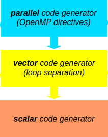
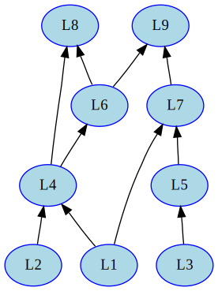
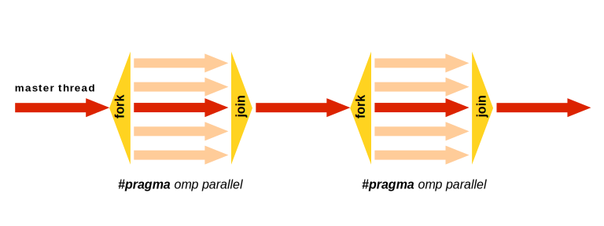
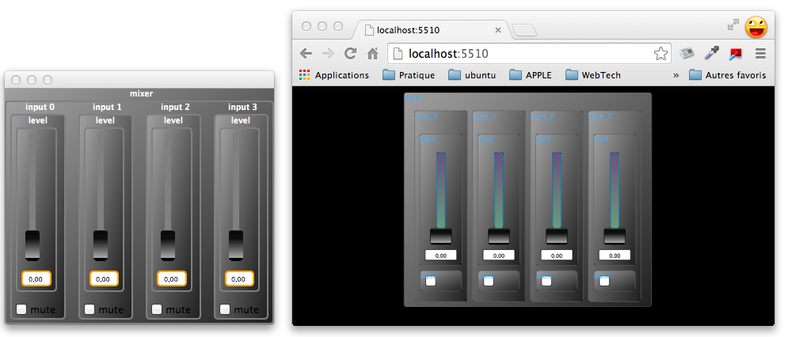
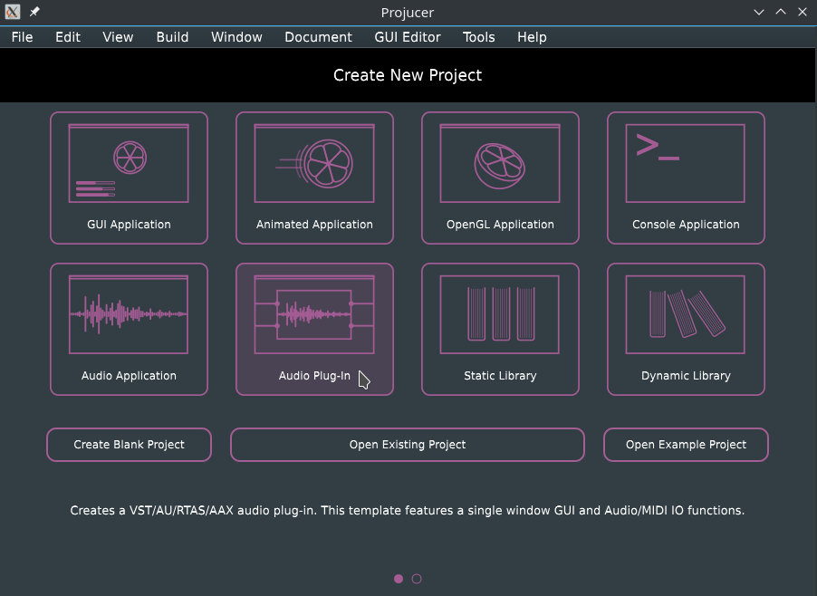
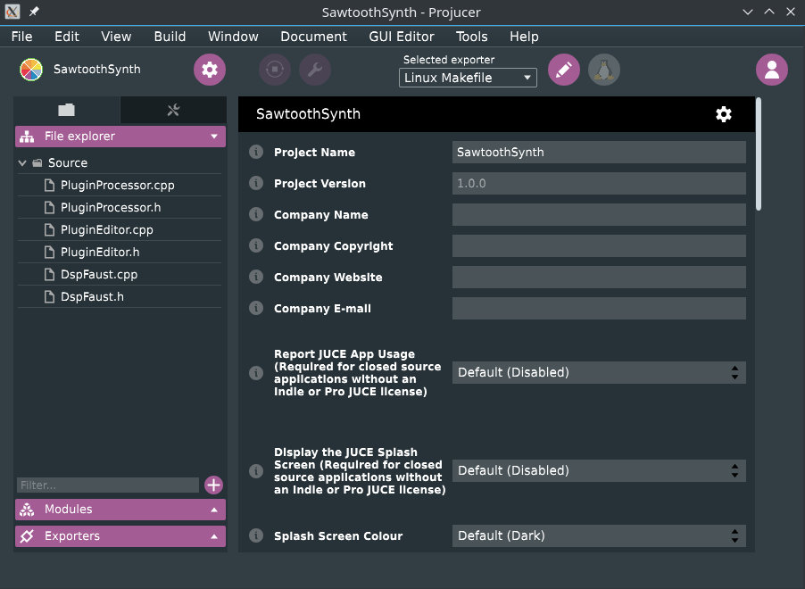
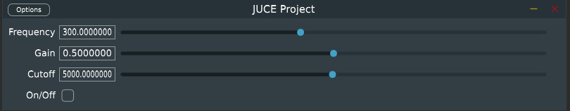
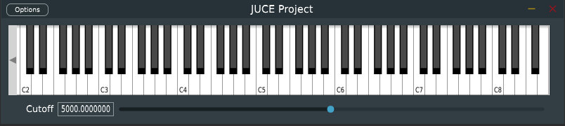

Introduction
What is Faust?
Faust (Functional Audio Stream) is a functional programming language for sound synthesis and audio processing with a strong focus on the design of synthesizers, musical instruments, audio effects, etc. Faust targets high-performance signal processing applications and audio plug-ins for a variety of platforms and standards. It is used on stage for concerts and artistic productions, in education and research, in open source projects as well as in commercial applications.
The core component of Faust is its compiler. It allows to “translate” any Faust digital signal processing (DSP) specification to a wide range of non-domain specific languages such as C++, C, JAVA, JavaScript, LLVM bit code, WebAssembly, etc. In this regard, Faust can be seen as an alternative to C++ but is much simpler and intuitive to learn.
Thanks to a wrapping system called “architectures,” codes generated by Faust can be easily compiled into a wide variety of objects ranging from audio plug-ins to standalone applications or smartphone and web apps, etc. (check the Quick Tour of the Faust Targets section for an exhaustive list.
This manual gives an overview of the Faust programming language and of its features through various interactive examples.
What is Faust Good For?
Faust’s syntax allows to express any DSP algorithm as a block diagram. For example, + is considered as a valid function (and block) taking two arguments (signals) and returning one:

Blocks can be easily connected together using the : “connection” composition:

In that case, we add two signals together and then scale the result of this operation.
Thus, Faust is perfect to implement time-domain algorithms that can be easily represented as block diagrams such as filters, waveguide physical models, virtual analog elements, etc.
Faust is very concise, for example, here’s the implementation of a one pole filter/integrator equivalent to \(y(n) = x(x) + a_{1}y(n-1)\) (where \(a_{1}\) is the pole):

Codes generated by Faust are extremely optimized and usually more efficient that handwritten codes (at least for C and C++). The Faust compiler tries to optimize each element of an algorithm. For example, you shouldn’t have to worry about using divides instead of multiplies as they get automatically replaced by multiplies by the compiler when possible, etc.
Faust is very generic and allows to write code that will run on dozens of platforms.
What is Faust Not (So) Good For?
Despite all this, Faust does have some limitations. For instance, it doesn’t allow for the efficient implementation of algorithms requiring multi-rates such as the FFT, convolution, etc. While there are tricks to go around this issue, we’re fully aware that it is a big one and we’re working as hard as possible on it.
Faust’s conciseness can sometimes become a problem too, especially for complex algorithms with lots of recursive signals. It is usually crucial in Faust to have the “mental global picture” of the algorithm to be implemented which in some cases can be hard.
While the Faust compiler is relatively bug-free, it does have some limitations and might get stuck in some extreme cases that you will probably never encounter. If you do, shoot us an e-mail!
From here, you can jump to … if you wanna get your hands dirty, etc. TODO.
Design Principles
Since the beginning of its development in 2002, Faust has been guided by various design principles:
- Faust is a specification language. It aims at providing an adequate notation to describe signal processors from a mathematical point of view. Faust is, as much as possible, free from implementation details.
- Faust programs are fully compiled (i.e., not interpreted). The compiler translates Faust programs into equivalent programs in other languages (e.g., JAVA, JavaScript, LLVM bit code, WebAssembly, etc.) taking care of generating the most efficient code. The result can generally compete with, and sometimes even outperform, C++ code written by seasoned programmers.
- The generated code works at the sample level. It is therefore suited to implement low-level DSP functions like recursive filters. Moreover the code can be easily embedded. It is self-contained and doesn’t depend of any DSP library or runtime system. It has a very deterministic behavior and a constant memory footprint.
- The semantic of Faust is simple and well defined. This is not just of academic interest. It allows the Faust compiler to be semantically driven. Instead of compiling a program literally, it compiles the mathematical function it denotes. This feature is useful for example to promote components reuse while preserving optimal performance.
- Faust is a textual language but nevertheless block-diagram oriented. It actually combines two approaches: functional programming and algebraic block-diagrams. The key idea is to view block-diagram construction as function composition. For that purpose, Faust relies on a block-diagram algebra of five composition operations:
: , ~ <: :>(see the section on Diagram Composition Operations for more details). - Thanks to the concept of architecture, Faust programs can be easily deployed on a large variety of audio platforms and plugin formats without any change to the Faust code.
Signal Processor Semantic
A Faust program describes a signal processor. The role of a signal processor is to transforms a (possibly empty) group of input signals in order to produce a (possibly empty) group of output signals. Most audio equipments can be modeled as signal processors. They have audio inputs, audio outputs as well as control signals interfaced with sliders, knobs, vu-meters, etc.
More precisely :
- A signal \(s\) is a discrete function of time \(s:\mathbb{Z}\rightarrow\mathbb{R}\). The value of a signal \(s\) at time \(t\) is written \(s(t)\). The values of signals are usually needed starting from time \(0\). But to take into account delay operations, negative times are possible and are always mapped to zeros. Therefore for any Faust signal \(s\) we have \(\forall t<0, s(t)=0\). In operational terms this corresponds to assuming that all delay lines are signals initialized with \(0\)s.
- Faust considers two type of signals: integer signals (\(s:\mathbb{Z}\rightarrow\mathbb{Z}\)) and floating point signals (\(s:\mathbb{Z}\rightarrow\mathbb{Q}\)). Exchanges with the outside world are, by convention, made using floating point signals. The full range is represented by sample values between \(-1.0\) and \(+1.0\).
- The set of all possible signals is \(\mathbb{S}=\mathbb{Z}\rightarrow\mathbb{R}\).
- A group of \(n\) signals (a n-tuple of signals) is written \((s_{1},\ldots,s_{n})\in \mathbb{S}^{n}\). The empty tuple, single element of \(\mathbb{S}^{0}\) is notated \(()\).
- A signal processors \(p\), is a function from n-tuples of signals to m-tuples of signals \(p:\mathbb{S}^{n}\rightarrow\mathbb{S}^{m}\). The set \(\mathbb{P}=\bigcup_{n,m}\mathbb{S}^{n}\rightarrow\mathbb{S}^{m}\) is the set of all possible signal processors.
As an example, let’s express the semantic of the Faust primitive +. Like any Faust expression, it is a signal processor. Its signature is \(\mathbb{S}^{2}\rightarrow\mathbb{S}\). It takes two input signals \(X_0\) and \(X_1\) and produces an output signal \(Y\) such that \(Y(t) = X_0(t)+X_1(t)\).
Numbers are signal processors too. For example the number \(3\) has signature \(\mathbb{S}^{0}\rightarrow\mathbb{S}\). It takes no input signals and produce an output signal \(Y\) such that \(Y(t) = 3\).
Quick Start
TODO Will be all based on the online editor… May be could be a simple copy and paste of the session 1 of the Kadenze course…
Overview of the Faust Universe
While in its most primitive form, Faust is distributed as a command-line compiler, a wide range of tools have been developed around it in the course of the past few years. Their variety and their function might be hard to grab at first. This sort chapter provides an overview of their role and will hopefully help you decide which one is better suited for your personal use.
TODO: here say a few words about the philosophy behind the disto: the online editor is the way to go for most users, then various pre-compiled packages of the compiler can be found, then source, then git. Finally other external tools for development.
The Faust Distribution
The Faust distribution hosts the source of the Faust compiler (both in its command line and library version), the source of the Faust architectures (targets), the various Faust compilation scripts, a wide range of Faust-related-tools, the Faust DSP Libraries (which in practice are hosted a separate Git submodule), etc.
The latest stable release of the Faust distribution can be found here: https://github.com/grame-cncm/faust/releases. It is recommended for most Faust users willing to compile the Faust compiler and libfaust from scratch.
To have the latest stable development version, you can use the master branch of the Faust git repository which is hosted on GitHub: https://github.com/grame-cncm/faust/tree/master.
For something even more bleeding edge (to be used at your own risks), you might use the master-dev branch of the Faust git repository: https://github.com/grame-cncm/faust/tree/master-dev. master-dev is the development sub-branch of master. It is used by Faust developers to commit their changes and can be considered as “the main development branch.” The goal is to make sure that master is always functional. Merges between master-dev and master are carried out multiple times a week by the GRAME team.
Also, note that pre-compiled packages of the Faust compiler and of
libfaustfor various platforms can be found on the Download Page of the Faust website.
The Faust distribution is organized as follows:
architecture/ : the source of the architecture files
benchmark/ : tools to measure the efficiency of the generated code
build/ : the various makefiles and build folders
compiler/ : sources of the Faust compiler
COPYING : license information
debian/ : files for Debian installation
Dockerfile : docker file
documentation/ : Faust's documentations
examples/ : Faust programs examples organized by categories
installer/ : various installers for Linux distribution
libraries/ : Faust DSP libraries
Makefile : makefile used to build and install Faust
README.md : instructions on how to build and install Faust
syntax-highlighting/ : support for syntax highlighting for several editors
tests/ : various tests
tools/ : tools to produce audio applications and plugins
windows/ : Windows related ressourcesThe following subsections present some of the main components of the Faust distribution.
Command-Line Compiler
- Link to precompiled version versions (download page)
- What is the Faust compiler? (Quickly)
- Link to Using the Faust Compiler
libfaust
- Link to precompiled version versions (download page)
- What is it? (Quickly)
- Link to tutorial Embedding the Faust Compiler Using
libfaust
faust2... Scripts
Web Tools
The Online Editor
The FaustPlayground
The Faust Online Compiler
Web Services
Development Tools
FaustLive
FaustWorks
Compiling and Installing Faust
This chapter describes how to get and compile the Faust compiler as well as other tools related to Faust (e.g., libfaust, libosc, libhttpd, etc.).
Getting the Source Code
An overview of the various places where the Faust source can be downloaded is given here.
If you downloaded the latest Faust release, just un-compressed the archive file and open it in a terminal. For instance, something like (this might vary depending on the version of Faust you downloaded):
tar xzf faust-2.5.31.tar.gz
cd faust-2.5.31If you wish to get the Faust source directly from the git repository, just run:
git clone --recursive https://github.com/grame-cncm/faust.git
cd faustin a terminal. Note that the --recursive option is necessary here since some elements (e.g., the Faust DSP libraries) are placed in other repositories.
Finally, if you wish to use the development (and potentially unstable) branch, just run:
git checkout master-devafter the previous 2 commands.
TODO: see with Dominique for whatever comes next here…
Since release 2.5.18, Faust compilation and installation is based on cmake.
Faust Syntax
Faust Program
A Faust program is essentially a list of statements. These statements can be metadata declarations (either global metadata or function metadata), imports, definitions, and documentation tags, with optional C++ style (//... and /*...*/) comments.
Here is a short Faust program that implements of a simple noise generator (called from the noises.lib Faust library). It exhibits various kind of statements : two global metadata declarations, an imports, a comment, and a definition. We will study later how documentation statements work:

declare name "Noise";
declare copyright "(c)GRAME 2018";
import("stdfaust.lib");
// noise level controlled by a slider
process = no.noise * hslider("gain",0,0,1, 0.1);The keyword process is the equivalent of main in C/C++. Any Faust program, to be valid, must at least define process.
Statements
The statements of a Faust program are of four kinds:
- metadata declarations,
- file imports,
- definitions,
- documentation.
All statements but documentation end with a semicolon ;.
Metadata
Metadata allow us to add elements which are not part of the language to Faust code. These can range to the name of a Faust program, its author, to potential compilation options or user interface element customizations.
There are three different types of metadata in Faust:
- Global Metadata: metadata global to a Faust code
- Function Metadata: metadata specific to a function
- UI Metadata: metadata specific to a UI element
Note that some Global Metadata have standard names and can be used for specific tasks. Their role is described in the Standard Metadata section.
Global Metadata
All global metadata declaration in Faust start with declare, followed by a key and a string. For example:
declare name "Noise";allows us to specify the name of a Faust program in its whole.
Unlike regular comments, metadata declarations will appear in the C++ code generated by the Faust compiler. A good practice is to start a Faust program with some standard declarations:
declare name "MyProgram";
declare author "MySelf";
declare copyright "MyCompany";
declare version "1.00";
declare license "BSD"; Function Metadata
Metadata can be associated to a specific function. In that case, declare is followed by the name of the function, a key, and a string. For example:
declare add author "John Doe"
add = +;This is very useful when a library has several contributors and that functions potentially have different license terms, etc.
Standard Metadata
There exists a series of standard global metadata in Faust whose role role is described in the following table:
| Metadata | Role |
|---|---|
declare options "[key0:value][key1:value]" |
This metadata can be used to specify various options associated to a Faust code such as the fact its polyphonic, if it should have OSC, MIDI support, etc. Specific keys usable with this metadata are described throughout this documentation. |
declare interface "xxx" |
Specifies an interface replacing the standard Faust UI. |
Imports
File imports allow us to import definitions from other source files.
For example import("maths.lib"); imports the definitions of the maths.lib library.
The most common file to be imported is the stdfaust.lib library which gives access to all the standard Faust libraries from a single point:

Documentation Tags
Documentation statements are optional and typically used to control the generation of the mathematical documentation of a Faust program. This documentation system is detailed in the Mathematical Documentation chapter. In this section we essentially describe the documentation statements syntax.
A documentation statement starts with an opening <mdoc> tag and ends with a closing </mdoc> tag. Free text content, typically in Latex format, can be placed in between these two tags.

Moreover, optional sub-tags can be inserted in the text content itself to require the generation, at the insertion point, of mathematical equations, graphical block-diagrams, Faust source code listing and explanation notice.

The generation of the mathematical equations of a Faust expression can be requested by placing this expression between an opening <equation> and a closing </equation> tag. The expression is evaluated within the lexical context of the Faust program.

Similarly, the generation of the graphical block-diagram of a Faust expression can be requested by placing this expression between an opening <diagram> and a closing </diagram> tag. The expression is evaluated within the lexical context of the Faust program.

The <metadata> tags allow to reference Faust global metadatas, calling the corresponding keyword.

The <notice/> empty-element tag is used to generate the conventions used in the mathematical equations.

The <listing/> empty-element tag is used to generate the listing of the Faust program. Its three attributes mdoctags, dependencies, and distributed enable or disable respectively <mdoc> tags, other files dependencies and distribution of interleaved Faust code between <mdoc> sections.
Definitions
A definition associates an identifier with an expression. Definitions are essentially a convenient shortcut avoiding to type long expressions. During compilation, more precisely during the evaluation stage, identifiers are replaced by their definitions. It is therefore always equivalent to use an identifier or directly its definition. Please note that multiple definitions of a same identifier are not allowed, unless it is a pattern matching based definition.
Simple Definitions
The syntax of a simple definition is:
identifier = expression ;For example here is the definition of random, a simple pseudo-random number generator:
random = +(12345) ~ *(1103515245);Function Definitions
Definitions with formal parameters correspond to functions definitions.
For example the definition of linear2db, a function that converts linear values to decibels, is:
linear2db(x) = 20*log10(x);Please note that this notation is only a convenient alternative to the direct use of lambda-abstractions (also called anonymous functions). The following is an equivalent definition of linear2db using a lambda-abstraction:
linear2db = \(x).(20*log10(x));Definitions with pattern matching
Moreover, formal parameters can also be full expressions representing patterns.
This powerful mechanism allows to algorithmically create and manipulate block diagrams expressions. Let’s say that you want to describe a function to duplicate an expression several times in parallel:
duplicate(1,x) = x;
duplicate(n,x) = x, duplicate(n-1,x);Note that this last definition is a convenient alternative to the more verbose:
duplicate = case {
(1,x) => x;
(n,x) => duplicate(n-1,x);
};A use case for duplicate could be to put 5 white noise generators in parallel:

import("stdfaust.lib");
duplicate(1,x) = x;
duplicate(n,x) = x, duplicate(n-1,x);
process = duplicate(5,no.noise);Here is another example to count the number of elements of a list. Please note that we simulate lists using parallel composition: (1,2,3,5,7,11). The main limitation of this approach is that there is no empty list. Moreover lists of only one element are represented by this element:
count((x,xs)) = 1+count(xs);
count(x) = 1;If we now write count(duplicate(10,666)), the expression will be evaluated as 10.
Note that the order of pattern matching rules matters. The more specific rules must precede the more general rules. When this order is not respected, as in:
count(x) = 1;
count((x,xs)) = 1+count(xs);the first rule will always match and the second rule will never be called.
Expressions
Despite its textual syntax, Faust is conceptually a block-diagram language. Faust expressions represent DSP block-diagrams and are assembled from primitive ones using various composition operations. More traditional numerical expressions in infix notation are also possible. Additionally Faust provides time based expressions, like delays, expressions related to lexical environments, expressions to interface with foreign function and lambda expressions.

Diagram Expressions
Diagram expressions are assembled from primitive ones using either binary composition operations or high level iterative constructions.

Diagram Composition Operations
Five binary composition operations are available to combine block-diagrams:
- recursion (
~), - parallel (
,), - sequential (
:), - split (
<:), - merge (
:>).
One can think of each of these composition operations as a particular way to connect two block diagrams.

To describe precisely how these connections are done, we have to introduce some notation. The number of inputs and outputs of a block-diagram \(A\) are expressed as \(\mathrm{inputs}(A)\) and \(\mathrm{outputs}(A)\). The inputs and outputs themselves are respectively expressed as: \([0]A\), \([1]A\), \([2]A\), \(\ldots\) and \(A[0]\), \(A[1]\), \(A[2]\), etc.
For each composition operation between two block-diagrams \(A\) and \(B\) we will describe the connections \(A[i]\rightarrow [j]B\) that are created and the constraints on their relative numbers of inputs and outputs.
The priority and associativity of this five operations are:
| Syntax | Priority | Association | Description |
|---|---|---|---|
expression ~ expression |
4 | left | Recursive Composition |
expression , expression |
3 | right | Parallel Composition |
expression : expression |
2 | right | Sequential Composition |
expression <: expression |
1 | right | Split Composition |
expression :> expression |
1 | right | Merge Composition |
Parallel Composition
The parallel composition (e.g., (A,B)) is probably the simplest one. It places the two block-diagrams one on top of the other, without connections. The inputs of the resulting block-diagram are the inputs of A and B. The outputs of the resulting block-diagram are the outputs of A and B.
Parallel composition is an associative operation: (A,(B,C)) and ((A,B),C) are equivalents. When no parenthesis are used (e.g., A,B,C,D), Faust uses right associativity and therefore builds internally the expression (A,(B,(C,D))). This organization is important to know when using pattern matching techniques on parallel compositions.
Example: Oscillators in Parallel
Parallel composition can be used to put 3 oscillators of different kinds and frequencies in parallel, which will result in a Faust program with 3 outputs:

Example: Stereo Effect
Parallel composition can be used to easily turn a mono effect into a stereo one which will result in a Faust program with 2 inputs and 2 outputs:

Note that there’s a better to write this last example using the par iteration:

Sequential Composition
The sequential composition (e.g., A:B) expects:
\[\mathrm{outputs}(A)=\mathrm{inputs}(B)\]
It connects each output of \(A\) to the corresponding input of \(B\):
\[A[i]\rightarrow[i]B\]
Sequential composition is an associative operation: (A:(B:C)) and ((A:B):C) are equivalents. When no parenthesis are used, like in A:B:C:D, Faust uses right associativity and therefore builds internally the expression (A:(B:(C:D))).
Example: Sine Oscillator
Since everything is considered as a signal generator in Faust, sequential composition can be simply used to pass an argument to a function:

Example: Effect Chain
Sequential composition can be used to create an audio effect chain. Here we’re plugging a guitar distortion to an autowah:

import("stdfaust.lib");
drive = 0.6;
offset = 0;
autoWahLevel = 1;
process = ef.cubicnl(drive,offset) : ve.autowah(autoWahLevel);Split Composition
The split composition (e.g., A<:B) operator is used to distribute the outputs of \(A\) to the inputs of \(B\).
For the operation to be valid, the number of inputs of \(B\) must be a multiple of the number of outputs of \(A\):
\[\mathrm{outputs}(A).k=\mathrm{inputs}(B)\]
Each input \(i\) of \(B\) is connected to the output \(i \bmod k\) of \(A\):
\[A[i \bmod k]\rightarrow[i]B\]
Example: Duplicating the Output of an Oscillator
Split composition can be used to duplicate signals. For example, the output of the following sawtooth oscillator is duplicated 3 times in parallel.

Note that this can be written in a more effective way by replacing _,_,_ with par(i,3,_) using the par iteration.
Example: Connecting a Mono Effect to a Stereo One
More generally, the split composition can be used to connect a block with a certain number of output to a block with a greater number of inputs:

import("stdfaust.lib");
drive = 0.6;
offset = 0;
process = ef.cubicnl(drive,offset) <: dm.zita_light;Note that an arbitrary number of signals can be split, for example:

import("stdfaust.lib");
drive = 0.6;
offset = 0;
process = par(i,2,ef.cubicnl(drive,offset)) <: par(i,2,dm.zita_light);Once again, the only rule with this is that in the expression A<:B the number of inputs of B has to be a multiple of the number of outputs of A.
Merge Composition
The merge composition (e.g., A:>B) is the dual of the split composition. The number of outputs of \(A\) must be a multiple of the number of inputs of \(B\):
\[\mathrm{outputs}(A)=k.\mathrm{inputs}(B)\]
Each output \(i\) of \(A\) is connected to the input \(i \bmod k\) of \(B\) :
\[A[i]\rightarrow\ [i \bmod k]B\]
The \(k\) incoming signals of an input of \(B\) are summed together.
Example: Summing Signals Together - Additive Synthesis
Merge composition can be used to sum an arbitrary number of signals together. Here’s an example of a simple additive synthesizer (note that the result of the sum of the signals is divided by 3 to prevent clicking):

import("stdfaust.lib");
freq = hslider("freq",440,50,3000,0.01);
gain = hslider("gain",1,0,1,0.01);
gate = button("gate");
envelope = gain*gate : si.smoo;
process = os.osc(freq),os.osc(freq*2),os.osc(freq*3) :> /(3)*envelope;While the resulting block diagram will look slightly different, this is mathematically equivalent to:

import("stdfaust.lib");
freq = hslider("freq",440,50,3000,0.01);
gain = hslider("gain",1,0,1,0.01);
gate = button("gate");
envelope = gain*gate : si.smoo;
process = (os.osc(freq) + os.osc(freq*2) + os.osc(freq*3))/(3)*envelope;Example: Connecting a Stereo Effect to a Mono One
More generally, the merge composition can be used to connect a block with a certain number of output to a block with a smaller number of inputs:

import("stdfaust.lib");
drive = 0.6;
offset = 0;
process = dm.zita_light :> ef.cubicnl(drive,offset);Note that an arbitrary number of signals can be split, for example:

import("stdfaust.lib");
drive = 0.6;
offset = 0;
process = par(i,2,dm.zita_light) :> par(i,2,ef.cubicnl(drive,offset));Once again, the only rule with this is that in the expression A:>B the number of outputs of A has to be a multiple of the number of inputs of B.
Recursive Composition
The recursive composition (e.g., A~B) is used to create cycles in the block-diagram in order to express recursive computations. It is the most complex operation in terms of connections.
To be applicable, it requires that:
\[\mathrm{outputs}(A) \geq \mathrm{inputs}(B) and \mathrm{inputs}(A) \geq \mathrm{outputs}(B)\]
Each input of \(B\) is connected to the corresponding output of \(A\) via an implicit 1-sample delay :
\[A[i]\stackrel{Z^{-1}}{\rightarrow}[i]B\]
and each output of \(B\) is connected to the corresponding input of \(A\):
\[B[i]\rightarrow [i]A\]
The inputs of the resulting block diagram are the remaining unconnected inputs of \(A\). The outputs are all the outputs of \(A\).
Example: Timer
Recursive composition can be used to implement a “timer” that will count each sample starting at time \(n=0\):

The difference equation corresponding to this program is:
\[y(n) = y(n-1) + 1\]
an its output signal will look like: \((1,2,3,4,5,6,\dots)\).
Example: One Pole Filter
Recursive composition can be used to implement a one pole filter with one line of code and just a few characters:

The difference equation corresponding to this program is:
\[y(n) = x(n) + a_{1}y(n-1)\]
Note that the one sample delay of the filter is implicit here so it doesn’t have to be declared.
Inputs and Outputs of an Expression
The number of inputs and outputs of a Faust expression can be known at compile time simply by using inputs(expression) and outputs(expression).
For example, the number of outputs of a sine wave oscillator can be known simply by writing the following program:

Note that Faust automatically simplified the expression by generating a program that just outputs 1.
This type of construction is useful to define high order functions and build algorithmically complex block-diagrams. Here is an example to automatically reverse the order of the outputs of an expression.
Xo(expr) = expr <: par(i,n,ba.selector(n-i-1,n))
with {
n = outputs(expr);
};And the inputs of an expression :
Xi(expr) = si.bus(n) <: par(i,n,ba.selector(n-i-1,n)) : expr
with {
n = inputs(expr);
};For example Xi(-) will reverse the order of the two inputs of the substraction:

import("stdfaust.lib");
Xi(expr) = si.bus(n) <: par(i,n,ba.selector(n-i-1,n)) : expr
with {
n = inputs(expr);
};
toto = os.osc(440),os.sawtooth(440), os.triangle(440);
process = Xi(-);Iterations
Iterations are analogous to for(...) loops in other languages and provide a convenient way to automate some complex block-diagram constructions.

The use and role of par, seq, sum, and prod are detailed in the following sections.
par Iteration
The par iteration can be used to duplicate an expression in parallel. Just like other types of iterations in Faust:
- its first argument is a variable name containing the number of the current iteration (a bit like the variable that is usually named
iin a for loop) starting at 0, - its second argument is the number of iterations,
- its third argument is the expression to be duplicated.
Example: Simple Additive Synthesizer

import("stdfaust.lib");
freq = hslider("freq",440,50,3000,0.01);
gain = hslider("gain",1,0,1,0.01);
gate = button("gate");
envelope = gain*gate : si.smoo;
nHarmonics = 4;
process = par(i,nHarmonics,os.osc(freq*(i+1))) :> /(nHarmonics)*envelope;i is used here at each iteration to compute the value of the frequency of the current oscillator. Also, note that this example could be re-wrtitten using sum iteration (see example in the corresponding section).
seq Iteration
The seq iteration can be used to duplicate an expression in series. Just like other types of iterations in Faust:
- its first argument is a variable name containing the number of the current iteration (a bit like the variable that is usually named
iin a for loop) starting at 0, - its second argument is the number of iterations,
- its third argument is the expression to be duplicated.
Example: Peak Equalizer
The fi.peak_eq function of the Faust libraries implements a second order “peak equalizer” section (gain boost or cut near some frequency). When placed in series, it can be used to implement a full peak equalizer:

import("stdfaust.lib");
nBands = 8;
filterBank(N) = hgroup("Filter Bank",seq(i,N,oneBand(i)))
with{
oneBand(j) = vgroup("[%j]Band %a",fi.peak_eq(l,f,b))
with{
a = j+1; // just so that band numbers don't start at 0
l = vslider("[2]Level[unit:db]",0,-70,12,0.01) : si.smoo;
f = nentry("[1]Freq",(80+(1000*8/N*(j+1)-80)),20,20000,0.01) : si.smoo;
b = f/hslider("[0]Q[style:knob]",1,1,50,0.01) : si.smoo;
};
};
process = filterBank(nBands);Note that i is used here at each iteration to compute various elements and to format some labels. Having user interface elements with different names is a way to force their differentiation in the generated interface.
sum Iteration
The sum iteration can be used to duplicate an expression as a sum. Just like other types of iterations in Faust:
- its first argument is a variable name containing the number of the current iteration (a bit like the variable that is usually named
iin a for loop) starting at 0, - its second argument is the number of iterations,
- its third argument is the expression to be duplicated.
Example: Simple Additive Synthesizer
The following example is just a slightly different version from the one presented in the par iteration section. While their block diagrams look slightly different, the generated code is exactly the same.

import("stdfaust.lib");
freq = hslider("freq",440,50,3000,0.01);
gain = hslider("gain",1,0,1,0.01);
gate = button("gate");
envelope = gain*gate : si.smoo;
nHarmonics = 4;
process = sum(i,nHarmonics,os.osc(freq*(i+1)))/(nHarmonics)*envelope;i is used here at each iteration to compute the value of the frequency of the current oscillator.
prod Iteration
The sum iteration can be used to duplicate an expression as a product. Just like other types of iterations in Faust:
- its first argument is a variable name containing the number of the current iteration (a bit like the variable that is usually named
iin a for loop) starting at 0, - its second argument is the number of iterations,
- its third argument is the expression to be duplicated.
Example: Amplitude Modulation Synthesizer
The following example implements an amplitude modulation synthesizer using an arbitrary number of oscillators thanks to the prod iteration:

import("stdfaust.lib");
freq = hslider("[0]freq",440,50,3000,0.01);
gain = hslider("[1]gain",1,0,1,0.01);
shift = hslider("[2]shift",0,0,1,0.01);
gate = button("[3]gate");
envelope = gain*gate : si.smoo;
nOscs = 4;
process = prod(i,nOscs,os.osc(freq*(i+1+shift)))*envelope;i is used here at each iteration to compute the value of the frequency of the current oscillator. Note that the shift parameter can be used to tune the frequency drift between each oscillator.
Infix Notation and Other Syntax Extensions
Infix notation is commonly used in mathematics. It consists in placing the operand between the arguments as in \(2+3\)
Besides its algebra-based core syntax, Faust provides some syntax extensions, in particular the familiar infix notation. For example if you want to multiply two numbers, say 2 and 3, you can write directly 2*3 instead of the equivalent core-syntax expression 2,3 : *.
The infix notation is not limited to numbers or numerical expressions. Arbitrary expressions A and B can be used, provided that A,B has exactly two outputs. For example _/2 is equivalent to _,2:/ which divides the incoming signal by 2.
Here are a few examples of equivalences:
| Infix Syntax | Core Syntax | |
|---|---|---|
2-3 |
\(\equiv\) | 2,3 : - |
2*3 |
\(\equiv\) | 2,3 : * |
_@7 |
\(\equiv\) | _,7 : @ |
_/2 |
\(\equiv\) | _,2 : / |
A<B |
\(\equiv\) | A,B : < |
In case of doubts on the meaning of an infix expression, for example _*_, it is useful to translate it to its core syntax equivalent, here _,_:*, which is equivalent to *.
Infix Operators
Built-in primitives that can be used in infix notation are called infix operators and are listed below. Please note that a more detailed description of these operators is available section on primitives.

Prefix Notation
Beside infix notation, it is also possible to use prefix notation. The prefix notation is the usual mathematical notation for functions \(f(x,y,z,\ldots)\), but extended to infix operators.
It consists in first having the operator, for example /, followed by its arguments between parentheses: /(2,3):
| Prefix Syntax | Core Syntax | |
|---|---|---|
*(2,3) |
\(\equiv\) | 2,3 : * |
@(_,7) |
\(\equiv\) | _,7 : @ |
/(_,2) |
\(\equiv\) | _,2 : / |
<(A,B) |
\(\equiv\) | A,B : < |
Partial Application
The partial application notation is a variant of the prefix notation in which not all arguments are given. For instance /(2) (divide by 2), ^(3) (rise to the cube), and @(512) (delay by 512 samples) are examples of partial applications where only one argument is given. The result of a partial application is a function that “waits” for the remaining arguments.
When doing partial application with an infix operator, it is important to note that the supplied argument is not the first argument, but always the second one:
| Prefix Partial Application Syntax | Core Syntax | |
|---|---|---|
+(C) |
\(\equiv\) | _,C : * |
-(C) |
\(\equiv\) | _,C : - |
<(C) |
\(\equiv\) | _,C : < |
/(C) |
\(\equiv\) | _,C : / |
For commutative operations that doesn’t matter. But for non-commutative ones, it is more “natural” to fix the second argument. We use divide by 2 (/(2)) or rise to the cube (^(3)) more often than the other way around.
Please note that this rule only applies to infix operators, not to other primitives or functions. If you partially apply a regular function to a single argument, it will correspond to the first parameter.
Example: Gain Controller
The following example demonstrates the use of partial application in the context of a gain controller:

' Time Expression
' is used to express a one sample delay. For example:

will delay the incoming signal by one sample.
' time expressions can be chained, so the output signal of this program:

will look like: \((0,0,1,1,1,1,\dots)\).
The ' time expression is useful when designing filters, etc. and is equivalent to @(1) (see the @ Time Expression).
@ Time Expression
@ is used to express a delay with an arbitrary number of samples. For example:

will delay the incoming signal by 10 samples.
A delay expressed with @ doesn’t have to be fixed but it must be positive and bounded. Therefore, the values of a slider are perfectly acceptable:

@ only allows for the implementation of integer delay. Thus, various fractional delay algorithms are implemented in the Faust libraries.
Environment Expressions
Faust is a lexically scoped language. The meaning of a Faust expression is determined by its context of definition (its lexical environment) and not by its context of use.
To keep their original meaning, Faust expressions are bounded to their lexical environment in structures called closures. The following constructions allow to explicitly create and access such environments. Moreover they provide powerful means to reuse existing code and promote modular design.

with Expression
The with construction allows to specify a local environment: a private list of definition that will be used to evaluate the left hand expression.
In the following example :

pink = f : + ~ g
with {
f(x) = 0.04957526213389*x - 0.06305581334498*x' + 0.01483220320740*x'';
g(x) = 1.80116083982126*x - 0.80257737639225*x';
};
process = pink;the definitions of f(x) and g(x) are local to f : + ~ g.
Please note that with is left associative and has the lowest priority:
f : + ~ g with {...}is equivalent to(f : + ~ g) with {...}.f : + ~ g with {...} with {...}is equivalent to((f : + ~ g) with {...}) with {...}.
letrec Expression
The letrec construction is somehow similar to with, but for difference equations instead of regular definitions. It allows us to easily express groups of mutually recursive signals, for example:
\[ x(t) = y(t-1) + 10\\ y(t) = x(t-1) - 1 \]
as E letrec { 'x = y+10; 'y = x-1; }
The syntax is defined by the following rules:

Note the special notation 'x = y + 10 instead of x = y' + 10. It makes syntactically impossible to write non-sensical equations like x=x+1.
Here is a more involved example. Let say we want to define an envelope generator with an attack and a release time (as a number of samples), and a gate signal. A possible definition could be:

import("stdfaust.lib");
ar(a,r,g) = v
letrec {
'n = (n+1) * (g<=g');
'v = max(0, v + (n<a)/a - (n>=a)/r) * (g<=g');
};
gate = button("gate");
process = os.osc(440)*ar(1000,1000,gate);With the following semantics for \(n(t)\) and \(v(t)\):
\[ n(t) = (n(t-1)+1) * (g(t) <= g(t-1))\\ v(t) = max(0, v(t-1) + (n(t-1)<a(t))/a(t) - (n(t-1)>=a(t))/r(t)) * (g(t)<=g(t-1)) \]
environment Expression
The environment construction allows to create an explicit environment. It is like a `with’, but without the left hand expression. It is a convenient way to group together related definitions, to isolate groups of definitions and to create a name space hierarchy.

In the following example an environment construction is used to group together some constant definitions :
constant = environment {
pi = 3.14159;
e = 2,718;
...
};The . construction allows to access the definitions of an environment (see next section).
Access Expression
Definitions inside an environment can be accessed using the . construction.

For example constant.pi refers to the definition of pi in the constant environment defined above.
Note that environments don’t have to be named. We could have written directly:
environment{pi = 3.14159; e = 2,718;....}.pilibrary Expression
The library construct allows to create an environment by reading the definitions from a file.

For example library("filters.lib") represents the environment obtained by reading the file filters.lib. It works like import("miscfilter.lib") but all the read definitions are stored in a new separate lexical environment. Individual definitions can be accessed as described in the previous paragraph. For example library("filters.lib").lowpass denotes the function lowpass as defined in the file miscfilter.lib.
To avoid name conflicts when importing libraries it is recommended to prefer library to import. So instead of :
import("filters.lib");
...
...lowpass....
...
};the following will ensure an absence of conflicts :
fl = library("filters.lib");
...
...fl.lowpass....
...
};In practice, that’s how the stdfaust.lib library works.
component Expression
The component construction allows us to reuse a full Faust program (e.g., a .dsp file) as a simple expression.

For example component("freeverb.dsp") denotes the signal processor defined in file freeverb.dsp.
Components can be used within expressions like in:
...component("karplus32.dsp") : component("freeverb.dsp")... Please note that component("freeverb.dsp") is equivalent to library("freeverb.dsp").process.
component works well in tandem with explicit substitution (see next section).
Explicit Substitution
Explicit substitution can be used to customize a component or any expression with a lexical environment by replacing some of its internal definitions, without having to modify it.

For example we can create a customized version of component("freeverb.dsp"), with a different definition of foo(x), by writing:
...component("freeverb.dsp")[foo(x) = ...;]...
};Foreign Expressions
Reference to external C functions, variables and constants can be introduced using the foreign function mechanism.

ffunction
An external C function is declared by indicating its name and signature as well as the required include file. The file maths.lib of the Faust distribution contains several foreign function definitions, for example the inverse hyperbolic sine function asinh:
asinh = ffunction(float asinh (float), <math.h>, "");Foreign functions with input parameters are considered pure math functions. They are therefore considered free of side effects and called only when their parameters change (that is at the rate of the fastest parameter).
Exceptions are functions with no input parameters. A typical example is the C rand() function. In this case, the compiler generates code to call the function at sample rate.
Signature
The signature part (float asinh (float) in the example presented in the previous section) describes the prototype of the C function: return type, function name, and list of parameter types. Because the name of the foreign function can possibly depend on the floating point precision in use (float, double and quad), it is possible to give a different function name for each floating point precision using a signature with up to three function names.

For example in the declaration:
asinh = ffunction(float asinhf|asinh|asinhl (float), <math.h>, "");the signature float asinhf|asinh|asinhl (float) indicates to use the function name asinhf in single precision, asinh in double precision and asinhl in long double (quad) precision.
Types
Only numerical functions involving simple int and float parameters are allowed currently in Faust. No vectors, tables or data structures can be passed as parameters or returned.
Variables and Constants
External variables and constants can also be declared with a similar syntax. In the same maths.lib file, the definition of the sampling rate constant SR and the definition of the block-size variable BS can be found:
SR = min(192000.0,max(1.0,fconstant(int fSamplingFreq, <math.h>)));
BS = fvariable(int count, <math.h>);Foreign constants are not supposed to vary. Therefore expressions involving only foreign constants are only computed once, during the initialization period.
Variable are considered to vary at block speed. This means that expressions depending of external variables are computed every block.
File Include
In declaring foreign functions one has also to specify the include file. It allows the Faust compiler to add the corresponding #include in the generated code.

Library File
In declaring foreign functions one can possibly specify the library where the actual code is located. It allows the Faust compiler to (possibly) automatically link the library. Note that this feature is only used with the LLVM backend in ‘libfaust’ dynamic library model.
Applications and Abstractions
Abstractions and applications are fundamental programming constructions directly inspired by Lambda-Calculus. These constructions provide powerful ways to describe and transform block-diagrams algorithmically.

Abstractions
Abstractions correspond to functions definitions and allow to generalize a block-diagram by making variable some of its parts.
Let’s say we want to transform a stereo reverb, dm.zita_light for instance, into a mono effect. The following expression can be written (see the sections on Split Composition and Merge Composition):
_ <: dm.zita_light :> _ The incoming mono signal is split to feed the two input channels of the reverb, while the two output channels of the reverb are mixed together to produce the resulting mono output.
Imagine now that we are interested in transforming other stereo effects. We could generalize this principle by making zita_light a variable:
\(zita_light).(_ <: zita_light :> _)The resulting abstraction can then be applied to transform other effects. Note that if zita_light is a perfectly valid variable name, a more neutral name would probably be easier to read like:
\(fx).(_ <: fx :> _)A name can be given to the abstraction and in turn use it on dm.zita_light:

Or even use a more traditional, but equivalent, notation:
mono(fx) = _ <: fx :> _;Applications
Applications correspond to function calls and allow to replace the variable parts of an abstraction with the specified arguments.

For example, the abstraction described in the previous section can be used to transform a stereo reverb:
mono(dm.zita_light)The compiler will start by replacing mono by its definition:
\(fx).(_ <: fx :> _)(dm.zita_light)Replacing the variable part with the argument is called beta-reduction in Lambda-Calculus
Whenever the Faust compiler find an application of an abstraction it replaces the variable part with the argument. The resulting expression is as expected:
(_ <: dm.zita_light :> _)Pattern Matching
Pattern matching rules provide an effective way to analyze and transform block-diagrams algorithmically.

For example case{ (x:y) => y:x; (x) => x; } contains two rules. The first one will match a sequential expression and invert the two part. The second one will match all remaining expressions and leave it untouched. Therefore the application:
case{(x:y) => y:x; (x) => x;}(reverb : harmonizer)will produce:
harmonizer : freeverbPlease note that patterns are evaluated before the pattern matching operation. Therefore only variables that appear free in the pattern are binding variables during pattern matching.
Primitives
The primitive signal processing operations represent the built-in functionalities of Faust, that is the atomic operations on signals provided by the language. All these primitives denote signal processors, in other words, functions transforming input signals into output signals.
Numbers
Faust considers two types of numbers: integers and floats. Integers are implemented as 32-bits integers, and floats are implemented either with a simple, double, or extended precision depending of the compiler options. Floats are available in decimal or scientific notation.

Like any other Faust expression, numbers are signal processors. For example the number 0.95 is a signal processor of type \(\mathbb{S}^{0}\rightarrow\mathbb{S}^{1}\) that transforms an empty tuple of signals \(()\) into a 1-tuple of signals \((y)\) such that \(\forall t\in\mathbb{N}, y(t)=0.95\).
waveform Primitive
The waveform primitive was designed to facilitate the use of rdtable (read table). It allows us to specify a fixed periodic signal as a list of samples.
waveform has two outputs:
- a constant and indicating the size (as a number of samples) of the period,
- the periodic signal itself.

For example waveform{0,1,2,3} produces two outputs: the constant signal 4 and the periodic signal \((0,1,2,3,0,1,2,3,0,1,\dots)\).
In the following example:

import("stdfaust.lib");
triangleWave = waveform{0,0.5,1,0.5,0,-0.5,-1,-.5};
triangleOsc(f) = triangleWave,int(os.phasor(8,f)) : rdtable;
f = hslider("freq",440,50,2000,0.01);
process = triangleOsc(f);waveform is used to define a triangle waveform (in its most primitive form), which is then used with a rdtable controlled by a phasor to implement a triangle wave oscillator. Note that the quality of this oscillator is very low because of the low resolution of the triangle waveform.
soundfile Primitive
The soundfile("label[url:path]", n) primitive allows for the access of externally defined sound file/resource. soundfile has one input (the read index in the sound), three fixed outputs:
- the audio wave length in frames
- the audio wave nominal sample rate
- the audio wave number of channels
and several more outputs for the audio channels themselves.
If more outputs than the actual number of channels in the sound file are used, the audio channels will be automatically duplicated up to the wanted number of outputs (so for instance, if a stereo file is used with four output channels, the same group of two channels will be duplicated).
If the sound file cannot be loaded for whatever reason, a default sound with one channel, a length of 1024 frames and null outputs (with samples of value 0) will be used. Note also that sound files are entirely loaded in memory by the architecture file.
Architecture files are responsible to load the actual soundfile. The SoundUI C++ class located in the faust/gui/SoundUI.h file in the Faust repository implements the void addSoundfile(label, path, sf_zone) method, which loads the actual soundfiles using the libsndfile library, and set up the sf_zone sound memory pointers. If label is used without any url metadata, it will be considered as the soundfile pathname.
Note that a special architecture file can well decide to access and use sound resources created by another means (that is, not directly loaded from a sound file). For instance a mapping between labels and sound resources defined in memory could be used, with some additional code in charge of actually setting up all sound memory pointers when void addSoundfile(label, path, sf_zone) is called by the buidUserInterface mechanism.
C-Equivalent Primitives
Most Faust primitives are analogous to their C counterpart but adapted to signal processing. For example + is a function of type \(\mathbb{S}^{2}\rightarrow\mathbb{S}^{1}\) that transforms a pair of signals \((x_1,x_2)\) into a 1-tuple of signals \((y)\) such that \(\forall t\in\mathbb{N}, y(t)=x_{1}(t)+x_{2}(t)\). + can be used to very simply implement a mixer:

Note that this is equivalent to (see Identity Function):

The function - has type \(\mathbb{S}^{2}\rightarrow\mathbb{S}^{1}\) and transforms a pair of signals \((x_1,x_2)\) into a 1-tuple of signals \((y)\) such that \(\forall t\in\mathbb{N}, y(t)=x_{1}(t)-x_{2}(t)\).
Be aware that the unary - only exists in a limited form. It can be used with numbers: -0.5 and variables: -myvar, but not with expressions surrounded by parenthesis, because in this case it represents a partial application. For instance, -(a*b) is a partial application. It is syntactic sugar for _,(a*b) : -. If you want to negate a complex term in parenthesis, you’ll have to use 0 - (a*b) instead.
Integer Number
Integer numbers are of type \(\mathbb{S}^{0}\rightarrow\mathbb{S}^{1}\) in Faust and can be described mathematically as \(y(t)=n\).
Example: DC Offset of 1

Floating Point Number
Floating point numbers are of type \(\mathbb{S}^{0}\rightarrow\mathbb{S}^{1}\) in Faust and can be described as \(y(t)=n.m\).
Example: DC Offset of 0.5

Identity Function
The identity function is expressed in Faust with the _ primitive.
- Type: \(\mathbb{S}^{1}\rightarrow\mathbb{S}^{1}\)
- Mathematical Description: \(y(t)=x(t)\)
Example: a Signal Passing Through
In the following example, the _ primitive is used to connect the single audio input of a Faust program to its output:

Cut Primitive
The cut primitive is expressed in Faust with !. It can be used to “stop”/terminate a signal.
- Type: \(\mathbb{S}^{1}\rightarrow\mathbb{S}^{0}\)
- Mathematical Description: \(\forall x\in\mathbb{S},(x)\rightarrow ()\)
Example: Stopping a Signal
In the following example, the ! primitive is used to stop one of two parallel signals:

int Primitive
The int primitive can be used to force the cast of a signal to int. It is of type \(\mathbb{S}^{1}\rightarrow\mathbb{S}^{1}\) and can be described mathematically as \(y(t)=(int)x(t)\). This primitive is useful when declaring indices to read in a table, etc.
- Type: \(\mathbb{S}^{1}\rightarrow\mathbb{S}^{1}\)
- Mathematical Description: \(y(t)=(int)x(t)\)
Example: Simple Cast

float Primitive
The float primitive can be used to force the cast of a signal to float.
- Type: \(\mathbb{S}^{1}\rightarrow\mathbb{S}^{1}\)
- Mathematical Description: \(y(t)=(float)x(t)\)
Example: Simple Cast

Add Primitive
The + primitive can be used to add two signals together.
- Type: \(\mathbb{S}^{2}\rightarrow\mathbb{S}^{1}\)
- Mathematical Description: \(y(t)=x_{1}(t)+x_{2}(t)\)
Example: Simple Mixer

Subtract Primitive
The - primitive can be used to subtract two signals.
- Type: \(\mathbb{S}^{2}\rightarrow\mathbb{S}^{1}\)
- Mathematical Description: \(y(t)=x_{1}(t)-x_{2}(t)\)
Example: Subtracting Two Input Signals

Multiply Primitive
The * primitive can be used to multiply two signals.
- Type: \(\mathbb{S}^{2}\rightarrow\mathbb{S}^{1}\)
- Mathematical Description: \(y(t)=x_{1}(t)*x_{2}(t)\)
Example: Multiplying a Signal by 0.5

Divide Primitive
The / primitive can be used to divide two signals.
- Type: \(\mathbb{S}^{2}\rightarrow\mathbb{S}^{1}\)
- Mathematical Description: \(y(t)=x_{1}(t)/{x_{2}(t)}\)
Example: Dividing a Signal by 2

Power Primitive
The ^ primitive can be used to raise to the power of N a signal.
- Type: \(\mathbb{S}^{2}\rightarrow\mathbb{S}^{1}\)
- Mathematical Description: \(y(t)=x_{1}(t)^{x_{2}(t)}\)
Example: Power of Two of a Signal

Modulo Primitive
The % primitive can be used to take the modulo of a signal.
- Type: \(\mathbb{S}^{2}\rightarrow\mathbb{S}^{1}\)
- Mathematical Description: \(y(t)=x_{1}(t)\%{x_{2}(t)}\)
Example: Phaser
The following example uses a counter and the % primitive to implement a basic phaser:

will output a signal: (0,1,2,3,4,5,6,7,8,9,0,1,2,3,4)
AND Primitive
Logical AND can be expressed in Faust with the & primitive.
- Type: \(\mathbb{S}^{2}\rightarrow\mathbb{S}^{1}\)
- Mathematical Description: \(y(t)=x_{1}(t)\&{x_{2}(t)}\)
Example
TODO
OR Primitive
Logical OR can be expressed in Faust with the | primitive.
- Type: \(\mathbb{S}^{2}\rightarrow\mathbb{S}^{1}\)
- Mathematical Description: \(y(t)=x_{1}(t)|{x_{2}(t)}\)
Example
The following example will output 1 if the incoming signal is smaller than 0.5 or greater than 0.7 and 0 otherwise. Note that the result of this operation could be multiplied to another signal to create a condition.

XOR Primitive
Logical XOR can be expressed in Faust with the xor primitive.
- Type: \(\mathbb{S}^{2}\rightarrow\mathbb{S}^{1}\)
- Mathematical Description: \(y(t)=x_{1}(t)\land {x_{2}(t)}\)
Example

Left Shift Primitive
Left shift can be expressed in Faust with the << primitive.
- Type: \(\mathbb{S}^{2}\rightarrow\mathbb{S}^{1}\)
- Mathematical Description: \(y(t)=x_{1}(t) << {x_{2}(t)}\)
Example

Right Shift Primitive
Right shift can be expressed in Faust with the >> primitive.
- Type: \(\mathbb{S}^{2}\rightarrow\mathbb{S}^{1}\)
- Mathematical Description: \(y(t)=x_{1}(t) >> {x_{2}(t)}\)
Example

Smaller Than Primitive
The smaller than comparison can be expressed in Faust with the < primitive.
- Type: \(\mathbb{S}^{2}\rightarrow\mathbb{S}^{1}\)
- Mathematical Description: \(y(t)=x_{1}(t) < {x_{2}(t)}\)
Example
The following code will output 1 if the input signal is smaller than 0.5 and 0 otherwise.

Smaller or Equal Than Primitive
The smaller or equal than comparison can be expressed in Faust with the <= primitive.
- Type: \(\mathbb{S}^{2}\rightarrow\mathbb{S}^{1}\)
- Mathematical Description: \(y(t)=x_{1}(t) <= {x_{2}(t)}\)
Example
The following code will output 1 if the input signal is smaller or equal than 0.5 and 0 otherwise.

Greater Than Primitive
The greater than comparison can be expressed in Faust with the > primitive.
- Type: \(\mathbb{S}^{2}\rightarrow\mathbb{S}^{1}\)
- Mathematical Description: \(y(t)=x_{1}(t) > {x_{2}(t)}\)
Example
The following code will output 1 if the input signal is greater than 0.5 and 0 otherwise.

Greater or Equal Than Primitive
The greater or equal than comparison can be expressed in Faust with the >= primitive.
- Type: \(\mathbb{S}^{2}\rightarrow\mathbb{S}^{1}\)
- Mathematical Description: \(y(t)=x_{1}(t) >= {x_{2}(t)}\)
Example
The following code will output 1 if the input signal is greater or equal than 0.5 and 0 otherwise.

Equal to Primitive
The equal to comparison can be expressed in Faust with the == primitive.
- Type: \(\mathbb{S}^{2}\rightarrow\mathbb{S}^{1}\)
- Mathematical Description: \(y(t)=x_{1}(t) == {x_{2}(t)}\)
Example

Different Than Primitive
The different than comparison can be expressed in Faust with the != primitive.
- Type: \(\mathbb{S}^{2}\rightarrow\mathbb{S}^{1}\)
- Mathematical Description: \(y(t)=x_{1}(t) != {x_{2}(t)}\)
Example

math.h-Equivalent Primitives
Most of the C math.h functions are also built-in as primitives (the others are defined as external functions in file math.lib).
acos Primitive
Arc cosine can be expressed as acos in Faust.
- Type: \(\mathbb{S}^{1}\rightarrow\mathbb{S}^{1}\)
- Mathematical Description: \(y(t)=\mathrm{acosf}(x(t))\)
Example

asin Primitive
Arc sine can be expressed as asin in Faust.
- Type: \(\mathbb{S}^{1}\rightarrow\mathbb{S}^{1}\)
- Mathematical Description: \(y(t)=\mathrm{asinf}(x(t))\)
Example

atan Primitive
Arc tangent can be expressed as atan in Faust.
- Type: \(\mathbb{S}^{1}\rightarrow\mathbb{S}^{1}\)
- Mathematical Description: \(y(t)=\mathrm{atanf}(x(t))\)
Example

atan2 Primitive
The arc tangent of 2 signals can be expressed as atan2 in Faust.
- Type: \(\mathbb{S}^{2}\rightarrow\mathbb{S}^{1}\)
- Mathematical Description: \(y(t)=\mathrm{atan2f}(x_{1}(t), x_{2}(t))\)
Example

cos Primitive
Cosine can be expressed as cos in Faust.
- Type: \(\mathbb{S}^{1}\rightarrow\mathbb{S}^{1}\)
- Mathematical Description: \(y(t)=\mathrm{cosf}(x(t))\)
Example

sin Primitive
Sine can be expressed as sin in Faust.
- Type: \(\mathbb{S}^{1}\rightarrow\mathbb{S}^{1}\)
- Mathematical Description: \(y(t)=\mathrm{sinf}(x(t))\)
Example

tan Primitive
Tangent can be expressed as tan in Faust.
- Type: \(\mathbb{S}^{1}\rightarrow\mathbb{S}^{1}\)
- Mathematical Description: \(y(t)=\mathrm{tanf}(x(t))\)
Example

exp Primitive
Base-e exponential can be expressed as exp in Faust.
- Type: \(\mathbb{S}^{1}\rightarrow\mathbb{S}^{1}\)
- Mathematical Description: \(y(t)=\mathrm{expf}(x(t))\)
Example

log Primitive
Base-e logarithm can be expressed as log in Faust.
- Type: \(\mathbb{S}^{1}\rightarrow\mathbb{S}^{1}\)
- Mathematical Description: \(y(t)=\mathrm{logf}(x(t))\)
Example

log10 Primitive
Base-10 logarithm can be expressed as log10 in Faust.
- Type: \(\mathbb{S}^{1}\rightarrow\mathbb{S}^{1}\)
- Mathematical Description: \(y(t)=\mathrm{log10}(x(t))\)
Example

pow Primitive
Power can be expressed as pow in Faust.
- Type: \(\mathbb{S}^{2}\rightarrow\mathbb{S}^{1}\)
- Mathematical Description: \(y(t)=\mathrm{powf}(x_{1}(t),x_{2}(t))\)
Example

sqrt Primitive
Square root can be expressed as sqrt in Faust.
- Type: \(\mathbb{S}^{1}\rightarrow\mathbb{S}^{1}\)
- Mathematical Description: \(y(t)=\mathrm{sqrtf}(x(t))\)
Example

abs Primitive
Absolute value can be expressed as abs in Faust.
- Type: \(\mathbb{S}^{1}\rightarrow\mathbb{S}^{1}\)
- Mathematical Description: \(y(t)=\mathrm{abs}(x(t))\) (int) or
\(y(t)=\mathrm{fabsf}(x(t))\) (float)
Example

min Primitive
Minimum can be expressed as min in Faust.
- Type: \(\mathbb{S}^{2}\rightarrow\mathbb{S}^{1}\)
- Mathematical Description: \(y(t)=\mathrm{min}(x_{1}(t),x_{2}(t))\)
Example

max Primitive
Maximum can be expressed as max in Faust.
- Type: \(\mathbb{S}^{2}\rightarrow\mathbb{S}^{1}\)
- Mathematical Description: \(y(t)=\mathrm{max}(x_{1}(t),x_{2}(t))\)
Example

fmod Primitive
Float modulo can be expressed as fmod in Faust.
- Type: \(\mathbb{S}^{2}\rightarrow\mathbb{S}^{1}\)
- Mathematical Description: \(y(t)=\mathrm{fmodf}(x_{1}(t),x_{2}(t))\)
Example

remainder Primitive
Float remainder can be expressed as remainder in Faust.
- Type: \(\mathbb{S}^{2}\rightarrow\mathbb{S}^{1}\)
- Mathematical Description: \(y(t)=\mathrm{remainderf}(x_{1}(t),x_{2}(t))\)
Example

floor Primitive
Largest int can be expressed as floor in Faust.
- Type: \(\mathbb{S}^{1}\rightarrow\mathbb{S}^{1}\)
- Mathematical Description: \(\leq\): \(y(t)=\mathrm{floorf}(x(t))\)
Example

ceil Primitive
Smallest int can be expressed as ceil in Faust.
- Type: \(\mathbb{S}^{1}\rightarrow\mathbb{S}^{1}\)
- Mathematical Description: \(\geq\): \(y(t)=\mathrm{ceilf}(x(t))\)
Example

rint Primitive
Closest int can be expressed as rint in Faust.
- Type: \(\mathbb{S}^{1}\rightarrow\mathbb{S}^{1}\)
- Mathematical Description: \(y(t)=\mathrm{rintf}(x(t))\)
Example

Delay Primitives and Modifiers
Faust hosts various modifiers and primitives to define one sample or integer delay of arbitrary length. They are presented in this section.
mem Primitive
A 1 sample delay can be expressed as mem in Faust.
- Type: \(\mathbb{S}^{1}\rightarrow\mathbb{S}^{1}\)
- Mathematical Description: \(y(t+1)=x(t),y(0)=0\)
Example

Note that this is equivalent to process = _' (see ' Modifier) and process = @(1) (see @ Primitive)
' Modifier
' can be used to apply a 1 sample delay to a signal in Faust. It can be seen as syntactic sugar to the mem primitive. ' is very convenient when implementing filters and can help significantly decrease the size of the Faust code.
Example

@ Primitive
An integer delay of N samples can be expressed as @(N) in Faust. Note that N can be dynamic but that its range must be bounded. This can be done by using a UI primitive (see example below) allowing for the definition of a range such as hslider, vslider, or nentry.
Note that floating point delay is also available in Faust by the mean of various fractional delay implementations available in the Faust standard libraries.
- Type: \(\mathbb{S}^{2}\rightarrow\mathbb{S}^{1}\)
- Mathematical Description: \(y(t+x_{2}(t))=x_{1}(t), y(t<x_{2}(t))=0\)
Usage
_ : @(N) : _Where:
N: the length of the delay as a number of samples
Example: Static N Samples Delay

Example: Dynamic N Samples Delay

Table Primitives
TODO
rtable Primitive
The rtable primitive can be used to read through a read-only (pre-defined before compilation) table. The table can either be implemented using a function controlled by a timer (such as ba.time) as demonstrated in the first example, or by using the waveform primitive (as shown in the second example). The idea is that the table is parsed during the initialization step and before audio computation begins.
- Type: \(\mathbb{S}^{3}\rightarrow\mathbb{S}^{1}\)
- Mathematical Description: \(y(t)=T[r(t)]\)
Usage
rtable(n,s,r) : _Where:
n: the table sizes: the tabler: the read index (anintbetween 0 andn)
Example: Basic Triangle Wave Oscillator Using the waveform Primitive
In this example, a basic (and dirty) triangle wave-table is defined using the waveform. It is then used with the rdtable primitive and a phasor to implement a triangle wave oscillator. Note that the output of

import("stdfaust.lib");
triangleWave = waveform{0,0.5,1,0.5,0,-0.5,-1,-.5};
triangleOsc(f) = triangleWave,int(os.phasor(8,f)) : rdtable;
f = hslider("freq",440,50,2000,0.01);
process = triangleOsc(f);Example: Basic Triangle Wave Oscillator Using the waveform Primitive
In this example, a sine table is implemented using the sin primitive and a timer (ba.time). The timer parses the sin function during the initialization step of the Faust program. It is then used with rdtable to implement a sine wave oscillator.

import("stdfaust.lib");
sineWave(tablesize) = float(ba.time)*(2.0*ma.PI)/float(tablesize) : sin;
tableSize = 1 << 16;
triangleOsc(f) = tableSize,sineWave(tableSize),int(os.phasor(tableSize,f)) : rdtable;
f = hslider("freq",440,50,2000,0.01);
process = triangleOsc(f);rwtable Primitive
The rwtable primitive can be used to implement a read/write table. It takes an audio input that can be written in the table using a record index (i.e., w below) and read using a read index (i.e., r below).
- Type: \(\mathbb{S}^{5}\rightarrow\mathbb{S}^{1}\)
- Mathematical Description: \(T[w(t)]=c(t); y(t)=T[r(t)]\)
Usage
_ : rwtable(n,s,w,_,r) : _Where:
n: the table sizes: the tablew: the write index (anintbetween 0 andn)r: the read index (anintbetween 0 andn)
Note that the fourth argument of rwtable corresponds to the input of the table.
Example: Simple Looper
In this example, an input signal is written in the table when record is true (equal to 1). The read index is constantly updated to loop through the table. The table size is set to 48000, which corresponds to one second if the sampling rate is 48000 KHz.

import("stdfaust.lib");
tableSize = 48000;
recIndex = (+(1) : %(tableSize)) ~ *(record);
readIndex = readSpeed/float(ma.SR) : (+ : ma.decimal) ~ _ : *(float(tableSize)) : int;
readSpeed = hslider("[0]Read Speed",1,0.001,10,0.01);
record = button("[1]Record") : int;
looper = rwtable(tableSize,0.0,recIndex,_,readIndex);
process = looper;Selector Primitives
Selector primitives can be used to create conditions in Faust and to implement switches to choose between several signals. Note that selector primitives optimize the code generated by the Faust compiler by only computing the selected signal.
select2 Primitives
The select2 primitive is a “two-ways selector” that can be used to select between 2 signals.
- Type: \(\mathbb{S}^{3}\rightarrow\mathbb{S}^{1}\)
- Mathematical Description: \(T[]=\{x_{0}(t),x_{1}(t)\}; y(t)=T[s(t)]\)
Usage
_,_ : select2(s) : _,_Where:
s: the selector (0for the first signal,1for the second one)
Example: Signal Selector
The following example allows the user to choose between a sine and a sawtooth wave oscillator.

import("stdfaust.lib");
s = nentry("Selector",0,0,1,1);
sig = os.osc(440),os.sawtooth(440) : select2(s);
process = sig;Note that select2 could be easily implemented from scratch in Faust using Boolean primitives:

import("stdfaust.lib");
s = nentry("Selector",0,0,1,1);
mySelect2(s) = *(s==0),*(s==1) :> _;
sig = os.osc(440),os.sawtooth(440) : mySelect2(s);
process = sig;While the behavior of this last solution is identical to the first one, the generated code will be less optimized as the sine and the sawtooth waves will both be computed all the time.
select3 Primitives
The select3 primitive is a “three-ways selector” that can be used to select between 3 signals.
- Type: \(\mathbb{S}^{4}\rightarrow\mathbb{S}^{1}\)
- Mathematical Description: \(T[]=\{x_{0}(t),x_{1}(t),x_{2}(t)\}; y(t)=T[s(t)]\)
Usage
_,_,_ : select3(s) : _,_,_Where:
s: the selector (0for the first signal,1for the second one,2for the third one)
Example: Signal Selector
The following example allows the user to choose between a sine, a sawtooth and a triangle wave oscillator.

import("stdfaust.lib");
s = nentry("Selector",0,0,1,1);
sig = os.osc(440),os.sawtooth(440),os.triangle(440) : select3(s);
process = sig;Note that select2 could be easily implemented from scratch in Faust using Boolean primitives:

import("stdfaust.lib");
s = nentry("Selector",0,0,2,1);
mySelect3(s) = *(s==0),*(s==1),*(s==2) :> _;
sig = os.osc(440),os.sawtooth(440),os.triangle(440) : mySelect3(s);
process = sig;While the behavior of this last solution is identical to the first one, the generated code will be less optimized as the sine, the sawtooth and the triangle waves will all be computed all the time.
User Interface Primitives and Configuration
Faust user interface widgets/primitives allow for an abstract description of a user interface from within the Faust code. This description is independent from any GUI toolkits/frameworks and is purely abstract. Widgets can be discrete (e.g., button, checkbox, etc.), continuous (e.g., hslider, vslider, nentry), and organizational (e.g., vgroup, hgroup).
Discrete and continuous elements are signal generators. For example, a button produces a signal which is 1 when the button is pressed and 0 otherwise:

These signals can be freely combined with other audio signals. In fact, the following code is perfectly valid and will generate sound:

Each primitive implements a specific UI element, but their appearance can also be completely modified using metadata (a little bit like HTML and CSS in the web). Therefore, hslider, vslider, and nentry) can for example be turned into a knob, a dropdown menu, etc. This concept is further developed in the section on UI metadata.
Continuous UI elements (i.e., hslider, vslider, and nentry) must all declare a range for the parameter they’re controlling. In some cases, this range is used during compilation to allocate memory and will impact the generated code. For example, in the case of:

a buffer of 10 samples will be allocated for the delay implemented with the @ primitive while 20 samples will be allocated in the following example:

button Primitive
The button primitive implements a button.
Usage
button("label") : _Where:
label: the label (expressed as a string) of the element in the interface
Example: Trigger

checkbox Primitive
The checkbox primitive implements a checkbox/toggle.
Usage
checkbox("label") : _Where:
label: the label (expressed as a string) of the element in the interface
Example: Trigger

hslider Primitive
The hslider primitive implements a horizontal slider.
Usage
hslider("label",init,min,max,step) : _Where:
label: the label (expressed as a string) of the element in the interfaceinit: the initial value of the slidermin: the minimum value of the slidermax: the maximum value of the sliderstep: the precision (step) of the slider (1 to count 1 by 1, 0.1 to count 0.1 by 0.1, etc.)
Example: Gain Control

vslider Primitive
The vslider primitive implements a vertical slider.
Usage
vslider("label",init,min,max,step) : _Where:
label: the label (expressed as a string) of the element in the interfaceinit: the initial value of the slidermin: the minimum value of the slidermax: the maximum value of the sliderstep: the precision (step) of the slider (1 to count 1 by 1, 0.1 to count 0.1 by 0.1, etc.)
Example

nentry Primitive
The nentry primitive implements a “numerical entry”.
Usage
nentry("label",init,min,max,step) : _Where:
label: the label (expressed as a string) of the element in the interfaceinit: the initial value of the numerical entrymin: the minimum value of the numerical entrymax: the maximum value of the numerical entrystep: the precision (step) of the numerical entry (1 to count 1 by 1, 0.1 to count 0.1 by 0.1, etc.)
Example

hgroup Primitive
The hgroup primitive implements a horizontal group. A group contains other UI elements that can also be groups. hgroup is not a signal processor per se and is just a way to label/delimitate part of a Faust code.
Usage
hgroup("label",x)Where:
label: the label (expressed as a string) of the element in the interfacex: the encapsulated/labeled Faust code
Example
In the following example, the 2 UI elements controlling an oscillator are encapsulated in a group.

import("stdfaust.lib");
freq = vslider("freq",440,50,1000,0.1);
gain = vslider("gain",0,0,1,0.01);
process = hgroup("Oscillator",os.sawtooth(freq)*gain);Note that the Oscillator group can be placed in a function in case we’d like to add elements to it multiple times.

import("stdfaust.lib");
oscGroup(x) = hgroup("Oscillator",x);
freq = oscGroup(vslider("freq",440,50,1000,0.1));
gain = oscGroup(vslider("gain",0,0,1,0.01));
process = os.sawtooth(freq)*gain;vgroup Primitive
The vgroup primitive implements a vertical group. A group contains other UI elements that can also be groups. vgroup is not a signal processor per se and is just a way to label/delimitate part of a Faust code.
Usage
vgroup("label",x)Where:
label: the label (expressed as a string) of the element in the interfacex: the encapsulated/labeled Faust code
Example
In the following example, the 2 UI elements controlling an oscillator are encapsulated in a group.

import("stdfaust.lib");
freq = hslider("freq",440,50,1000,0.1);
gain = hslider("gain",0,0,1,0.01);
process = vgroup("Oscillator",os.sawtooth(freq)*gain);Note that the Oscillator group can be placed in a function in case we’d like to add elements to it multiple times.

import("stdfaust.lib");
oscGroup(x) = vgroup("Oscillator",x);
freq = oscGroup(hslider("freq",440,50,1000,0.1));
gain = oscGroup(hslider("gain",0,0,1,0.01));
process = os.sawtooth(freq)*gain;tgroup Primitive
The tgroup primitive implements a “tab group.” Tab groups can be used to group UI elements in tabs in the interface. A group contains other UI elements that can also be groups. tgroup is not a signal processor per se and is just a way to label/delimitate part of a Faust code.
Usage
tgroup("label",x)Where:
label: the label (expressed as a string) of the element in the interfacex: the encapsulated/labeled Faust code
Example
In the following example, the 2 UI elements controlling an oscillator are encapsulated in a group.

import("stdfaust.lib");
freq = hslider("freq",440,50,1000,0.1);
gain = hslider("gain",0,0,1,0.01);
process = tgroup("Oscillator",os.sawtooth(freq)*gain);Note that the Oscillator group can be placed in a function in case we’d like to add elements to it multiple times.

import("stdfaust.lib");
oscGroup(x) = tgroup("Oscillator",x);
freq = oscGroup(hslider("freq",440,50,1000,0.1));
gain = oscGroup(hslider("gain",0,0,1,0.01));
process = os.sawtooth(freq)*gain;vbargraph Primitive
The vbargraph primitive implements a vertical bar-graph (typically a meter displaying the level of a signal).
Usage
vbargraph takes an input signal and outputs it while making it available to the UI.
_ : vbargraph("label",min,max) : _Where:
min: the minimum value of the signal in the interfacemax: the maximum value of the signal in the interface
Example: Simple VU Meter
A simple VU meter can be implemented using the vbargraph primitive:

Note the use of the attach primitive here that forces the compilation of the vbargraph without using its output signal (see section on the attach primitive).
hbargraph Primitive
The hbargraph primitive implements a horizontal bar-graph (typically a meter displaying the level of a signal).
Usage
hbargraph takes an input signal and outputs it while making it available to the UI.
_ : hbargraph("label",min,max) : _Where:
min: the minimum value of the signal in the interfacemax: the maximum value of the signal in the interface
Example: Simple VU Meter
A simple VU meter can be implemented using the hbargraph primitive:

Note the use of the attach primitive here that forces the compilation of the hbargraph without using its output signal (see section on the attach primitive).
attach Primitive
The attach primitive takes two input signals and produces one output signal which is a copy of the first input. The role of attach is to force its second input signal to be compiled with the first one. From a mathematical standpoint attach(x,y) is equivalent to 1*x+0*y, which is in turn equivalent to x, but it tells the compiler not to optimize-out y.
To illustrate this role, let’s say that we want to develop a mixer application with a vumeter for each input signals. Such vumeters can be easily coded in Faust using an envelope detector connected to a bargraph. The problem is that the signal of the envelope generators has no role in the output signals. Using attach(x,vumeter(x)) one can tell the compiler that when x is compiled vumeter(x) should also be compiled.
The examples in the hbargraph Primitive and the vbargraph Primitive illustrate well the use of attach.
Variable Parts of a Label
Labels can contain variable parts. These are indicated with the sign % followed by the name of a variable. During compilation each label is processed in order to replace the variable parts by the value of the variable. For example:

creates 8 sliders in parallel with different names while par(i,8,hslider("Voice", 0.9, 0, 1, 0.01)) would have created only one slider and duplicated its output 8 times.
The variable part can have an optional format digit. For example "Voice %2i" would indicate to use two digit when inserting the value of i in the string.
An escape mechanism is provided. If the sign % is followed by itself, it will be included in the resulting string. For example "feedback (%%)" will result in "feedback (%)".
Labels as Pathnames
Thanks to horizontal, vertical, and tabs groups, user interfaces have a hierarchical structure analog to a hierarchical file system. Each widget has an associated path name obtained by concatenating the labels of all its surrounding groups with its own label.
In the following example :
hgroup("Foo",
...
vgroup("Faa",
...
hslider("volume",...)
...
)
...
)the volume slider has pathname /h:Foo/v:Faa/volume.
In order to give more flexibility to the design of user interfaces, it is possible to explicitly specify the absolute or relative pathname of a widget directly in its label.
Elements of a path are separated using /. Group types are defined with the following identifiers:
| Group Type | Group Identifier |
|---|---|
hgroup |
h: |
vgroup |
v: |
tgroup |
t: |
Hence, the example presented in the section on the hgroup primitive can be rewritten as:

import("stdfaust.lib");
freq = vslider("h:Oscillator/freq",440,50,1000,0.1);
gain = vslider("h:Oscillator/gain",0,0,1,0.01);
process = os.sawtooth(freq)*gain;which will be reflected in C++ as:
virtual void buildUserInterface(UI* ui_interface) {
ui_interface->openHorizontalBox("Oscillator");
ui_interface->addVerticalSlider("freq", &fVslider1, 440.0f, 50.0f, 1000.0f, 0.100000001f);
ui_interface->addVerticalSlider("gain", &fVslider0, 0.0f, 0.0f, 1.0f, 0.00999999978f);
ui_interface->closeBox();
}Note that path names are inherent to the use of tools gravitating around Faust such as OSC control or faust2api. In the case of faust2api, since no user interface is actually generated, UI elements just become a way to declare parameters of a Faust object. Therefore, there’s no distinction between nentry, hslider, vslider, etc.
Smoothing
Despite the fact that the signal generated by user interface elements can be used in Faust with any other signals, UI elements run at a slower rate than the audio rate. This might be a source of clicking if the value of the corresponding parameter is modified while the program is running. This behavior is also amplified by the low resolution of signals generated by UI elements (as opposed to actual audio signals). For example, changing the value of the freq or gain parameters of the following code will likely create clicks (in the case of gain) or abrupt jumps (in the case of freq) in the signal:

import("stdfaust.lib");
freq = hslider("freq",440,50,1000,0.1);
gain = hslider("gain",0,0,1,0.01);
process = os.osc(freq)*gain;This problem can be easily solved in Faust by using the si.smoo function which implements an exponential smoothing by a unit-dc-gain one-pole lowpass with a pole at 0.999 (si.smoo is just sugar for si.smooth(0.999)). Therefore, the previous example can be rewritten as:

import("stdfaust.lib");
freq = hslider("freq",440,50,1000,0.1) : si.smoo;
gain = hslider("gain",0,0,1,0.01) : si.smoo;
process = os.osc(freq)*gain;Beware that each si.smoo that you place in your code will add some extra computation so they should be used precociously.
Links to Generated Code
UI elements provide a convenient entry point to the DSP process in the code generated by the Faust compiler (e.g., C++, etc.). For example, the Faust program:
import("stdfaust.lib");
freq = hslider("freq",440,50,1000,0.1);
process = os.osc(freq);will have the corresponding buildUserInterface method in C++:
virtual void buildUserInterface(UI* ui_interface) {
ui_interface->openVerticalBox("osc");
ui_interface->addHorizontalSlider("freq", &fHslider0, 440.0f, 50.0f, 1000.0f, 0.100000001f);
ui_interface->closeBox();
}The second argument of the addHorizontalSlider method is a pointer to the variable containing the current value of the freq parameter. The value of this pointer can be updated at any point to change the frequency of the corresponding oscillator.
UI Label Metadata
Widget labels can contain metadata enclosed in square brackets. These metadata associate a key with a value and are used to provide additional information to the architecture file. They are typically used to improve the look and feel of the user interface, configure OSC and accelerometer control/mapping, etc. Since the format of the value associated to a key is relatively open, metadata constitute a flexible way for programmers to add features to the language.
The Faust code:
process = *(hslider("foo[key1: val 1][key2: val 2]",0,0,1,0.1));will produce the corresponding C++ code:
class mydsp : public dsp {
...
virtual void buildUserInterface(UI* ui_interface) {
ui_interface->openVerticalBox("tst");
ui_interface->declare(&fHslider0, "key1", "val 1");
ui_interface->declare(&fHslider0, "key2", "val 2");
ui_interface->addHorizontalSlider("foo", &fHslider0, 0.0f, 0.0f, 1.0f, 0.100000001f);
ui_interface->closeBox();
}
...
};All metadata are removed from the label by the compiler and transformed in calls to the UI::declare() method. All these UI::declare() calls will always take place before the UI::AddSomething() call that creates the User Interface element. This allows the UI::AddSomething() method to make full use of the available metadata.
Metadata are architecture-specific: it is up to the architecture file to decide what to do with it. While some metadata will work with most architectures (e.g., accelerometer and OSC configuration, etc.), others might be more specific. Some of them are presented in the following sections.
Ordering UI Elements
The order of UI declarations in a Faust code doesn’t necessarily reflect the actual order of the UI elements in the corresponding interface. Therefore, UI elements can be ordered by placing a metadata before the declaration of the name of the UI element in the label. For example, in the following declaration:
gain = vslider("h:Oscillator/[1]gain",0,0,1,0.01);
freq = vslider("h:Oscillator/[0]freq",440,50,1000,0.1);the freq parameter will be placed before gain despite the fact that gain is declared first.
This system can be used to order groups as well. Ordering will be carried out on elements at the same level. For example:

import("stdfaust.lib");
freqS = vslider("h:Oscillators/h:[0]Sawtooth/[0]freq",440,50,1000,0.1);
gainS = vslider("h:Oscillators/h:[0]Sawtooth/[1]gain",0,0,1,0.01);
freqT = vslider("h:Oscillators/h:[1]Triangle/[0]freq",440,50,1000,0.1);
gainT = vslider("h:Oscillators/h:[1]Triangle/[1]gain",0,0,1,0.01);
process = os.sawtooth(freqS)*gainS + os.triangle(freqT)*gainT;Note that this could also be written as:

import("stdfaust.lib");
freqS = vslider("[0]freq",440,50,1000,0.1);
gainS = vslider("[1]gain",0,0,1,0.01);
freqT = vslider("[0]freq",440,50,1000,0.1);
gainT = vslider("[1]gain",0,0,1,0.01);
process = hgroup("Oscillators",
hgroup("[0]Sawtooth",os.sawtooth(freqS)*gainS) +
hgroup("[1]Triangle",os.triangle(freqT)*gainT)
);Global UI Metadata
Note that global user interfaces completely replacing the one defined using the standard Faust UI primitives may be declared using global metadata. This is the case of the SmartKeyboard interface for example.
In the following subsections, the standard Faust UI metadata are documented. Other types of metadata (e.g., accelerometers, OSC, etc.) are documented in the sections related to these topics.
[style:knob] Metadata
The [style:knob] metadata turns any continuous UI element (i.e., hslider, vslider, nentry) into a knob.
Example

import("stdfaust.lib");
freq = vslider("freq[style:knob]",440,50,1000,0.1);
process = os.sawtooth(freq);[style:menu] Metadata
The [style:menu] metadata turns any continuous UI element (i.e., hslider, vslider, nentry) into a drop-down menu.
Usage
[style:menu{'Name0':value0;'Name1':value1}]Where:
NameN: the name associated tovalueNvalueN: the value associated toNameN
Example: Selector

import("stdfaust.lib");
s = vslider("Signal[style:menu{'Noise':0;'Sawtooth':1}]",0,0,1,1);
process = select2(s,no.noise,os.sawtooth(440));[style:radio] Metadata
The [style:radio] metadata turns a hslider or a vslider into a radio-button-menu. The orientation of the menu is determined by the type of UI element (i.e., hslider for horizontal and vslider for vertical).
Usage
[style:radio{'Name0':value0;'Name1':value1}]Where:
NameN: the name associated tovalueNvalueN: the value associated toNameN
Example: Selector

import("stdfaust.lib");
s = vslider("Signal[style:radio{'Noise':0;'Sawtooth':1}]",0,0,1,1);
process = select2(s,no.noise,os.sawtooth(440));[style:led] Metadata
The [style:led] metadata turns a vbargraph or a hbargraph into a blinking LED (with varying intensity).
Example: Level Display

import("stdfaust.lib");
process = _ <: attach(_,abs : ba.linear2db : vbargraph("Level[style:led]",-60,0));[unit:dB] Metadata
The [style:dB] metadata changes the unit of a vbargraph or a hbargraph to dB. This impacts its overall appearance by applying a rainbow color scheme, etc.
Example: Level Display

import("stdfaust.lib");
process = _ <: attach(_,abs : ba.linear2db : vbargraph("Level[style:dB]",-60,0));[unit:xx] Metadata
The [unit:xx] metadata allows us to specify the unit of a UI element. The unit will be displayed right next to the current value of the parameter in the interface.
Usage
[unit:xx]Where:
xx: the unit of the current parameter
Example

import("stdfaust.lib");
freq = vslider("freq[unit:Hz]",440,50,1000,0.1);
process = os.sawtooth(freq);[scale:xx] Metadata
The [scale:xx] metadata allows for the specification of a scale (different than the default linear one) to the parameter in the UI. [scale:log] can be used to change to scale to logarithmic and [scale:exp] to exponential.
[tooltip:xx] Metadata
The [tooltip:xx] metadata allows for the specification of a “tooltip” when
the mouse hover a parameter in the interface. This is very convenient when implementing complex interfaces.
Usage
[tooltip:xx]Where:
xx: a string to be used as a tooltip in the interface
Example

import("stdfaust.lib");
freq = vslider("freq[tooltip:The frequency of the oscillator]",440,50,1000,0.1);
process = os.sawtooth(freq);[hidden:xx] Metadata
The [hidden:xx] metadata can be used to hide a parameter in the interface. This is convenient when controlling a parameter with a motion sensor or OSC messages and we don’t want it to be visible in the interface. This feature is commonly used when making apps for Android and iOS using faust2android or faust2ios.
Compatibility
- iOS
- Android
Using the Faust Compiler
While the Faust compiler is available in different forms (e.g., Embedded Compiler, etc.), its most “common” one is the command line version, which can be invoked using the faust command. It translates a Faust program into code in a wide range of languages (C, O-C++, C++, Rust, JAVA, JavaScript, ASM JavaScript, LLVM, C-LLVM, FIR, and WebAssembly). The generated code can be wrapped into an optional architecture file allowing to directly produce a fully operational program.
A typical call of the Faust command line compiler is:
faust [OPTIONS] faustFile.dspThe Faust compiler outputs C++ code by default therefore running
faust noise.dsp will compile noise.dsp and output the corresponding C++ code on the standard output. The option -o allows to reroute the standard output to a file:
faust noise.dsp -o noise.cppThe -a option allows us to wrap the generated code into an architecture file:
faust -a alsa-gtk.cpp noise.dsp which can either be placed in the same folder as the current Faust file (noise.dsp here) or be one of the standard Faust architectures.
To compile a Faust program into an ALSA application on Linux, the following commands can be used:
faust -a alsa-gtk.cpp noise.dsp -o noise.cpp
g++ -lpthread -lasound `pkg-config --cflags --libs gtk+-2.0` noise.cpp -o noiseNote that a wide range of faust2... compilation scripts can be used to facilitate this operation by taking a Faust file and returning the corresponding binary for your platform.
Structure of the Generated Code
A Faust DSP C++ class derives from the base dsp class defined as below (a similar structure is used for languages than C++):
class dsp {
public:
dsp() {}
virtual ~dsp() {}
// Returns the number of inputs of the Faust program
virtual int getNumInputs() = 0;
// Returns the number of outputs of the Faust program
virtual int getNumOutputs() = 0;
// This method can be called to retrieve the UI description of
// the Faust program and its associated fields
virtual void buildUserInterface(UI* ui_interface) = 0;
// Returns the current sampling rate
virtual int getSampleRate() = 0;
// Init methods
virtual void init(int samplingRate) = 0;
virtual void instanceInit(int samplingRate) = 0;
virtual void instanceConstants(int samplingRate) = 0;
virtual void instanceResetUserInterface() = 0;
virtual void instanceClear() = 0;
// Returns a clone of the instance
virtual dsp* clone() = 0;
// Retrieve the global metadata of the Faust program
virtual void metadata(Meta* m) = 0;
// Compute one audio frame
virtual void compute(int count, FAUSTFLOAT** inputs, FAUSTFLOAT** outputs) = 0;
// Compute a time-stamped audio frame
virtual void compute(double /*date_usec*/, int count, FAUSTFLOAT** inputs,
FAUSTFLOAT** outputs) { compute(count, inputs, outputs); }
};Methods are filled by the compiler with the actual code. In the case of noise.dsp:
class mydsp : public dsp {
private:
int iRec0[2];
int fSamplingFreq;
public:
void metadata(Meta* m) {
m->declare("author", "GRAME");
m->declare("filename", "noise");
m->declare("name", "Noise");
m->declare("noises.lib/name", "Faust Noise Generator Library");
m->declare("noises.lib/version", "0.0");
}
virtual int getNumInputs() {
return 0;
}
virtual int getNumOutputs() {
return 1;
}
virtual int getInputRate(int channel) {
int rate;
switch (channel) {
default: {
rate = -1;
break;
}
}
return rate;
}
virtual int getOutputRate(int channel) {
int rate;
switch (channel) {
case 0: {
rate = 1;
break;
}
default: {
rate = -1;
break;
}
}
return rate;
}
static void classInit(int samplingFreq) {}
virtual void instanceConstants(int samplingFreq) {
fSamplingFreq = samplingFreq;
}
virtual void instanceResetUserInterface() {}
virtual void instanceClear() {
for (int l0 = 0; (l0 < 2); l0 = (l0 + 1)) {
iRec0[l0] = 0;
}
}
virtual void init(int samplingFreq) {
classInit(samplingFreq);
instanceInit(samplingFreq);
}
virtual void instanceInit(int samplingFreq) {
instanceConstants(samplingFreq);
instanceResetUserInterface();
instanceClear();
}
virtual mydsp* clone() {
return new mydsp();
}
virtual int getSampleRate() {
return fSamplingFreq;
}
virtual void buildUserInterface(UI* ui_interface) {
ui_interface->openVerticalBox("Noise");
ui_interface->closeBox();
}
virtual void compute(int count, FAUSTFLOAT** inputs, FAUSTFLOAT** outputs) {
FAUSTFLOAT* output0 = outputs[0];
for (int i = 0; (i < count); i = (i + 1)) {
iRec0[0] = ((1103515245 * iRec0[1]) + 12345);
output0[i] = FAUSTFLOAT((4.65661287e-10f * float(iRec0[0])));
iRec0[1] = iRec0[0];
}
}
};Several fine-grained initialization methods are available. The instanceInit method calls several additional initialization methods. The instanceConstants method sets the instance constant state. The instanceClear method resets the instance dynamic state (delay lines…). The instanceResetUserInterface method resets all control value to their default state. All of those methods can be used individually on an allocated instance to reset part of its state.
The init method combines class static state and instance initialization.
When using a single instance, calling init is the simplest way to do “what is needed.” When using several instances, all of them can be initialized using instanceInit, with a single call to classInit to initialize the static shared state.
Compilation Options
| Short | Long | Description |
|---|---|---|
-h |
--help |
print the help message |
-v |
--version |
print the compiler version information |
-d |
--details |
print the compilation details |
-tg |
--task-graph |
Draw a graph of all internal computational loops as .dot (graphviz) file |
-sg |
--signal-graph |
Draw a graph of all internal computational loops as .dot (graphviz) file |
-ps |
--postscript |
Generate the block-diagram postscript file |
-svg |
--svg |
Generate the block-diagram svg file |
-mdoc |
--mathdoc |
Generate the full mathematical documentation of a Faust program |
-mdlang <l> |
--mathdoc-lang |
Choose the language of the mathematical description (l = en, fr, etc.) |
-stripmdoc |
--strip-mdoc-tags |
Remove documentation tags when printing Faust listings |
-sd |
--simplify-diagrams |
Try to further simplify block diagrams before drawing them |
-f <n> |
--fold <n> |
Max complexity of svg diagrams before splitting into several files (default 25 elements) |
-mns <n> |
--max-name-size <n> |
Max character size used in svg diagrams labels |
-sn |
--simple-names |
Use simple names (without arguments) for block-diagram generation (default max size: 40 chars) |
-xml |
-xml |
Generate an XML description file |
-exp10 |
--generate-exp10 |
Function call instead of pow(10) function |
-json |
-json |
Generate a JSON description file |
-blur |
--shadow-blur |
Add a blur to boxes shadows in block diagrams |
-lb |
--left-balanced |
Generate left-balanced expressions in block diagrams |
-mb |
--mid-balanced |
Generate mid-balanced expressions in block diagrams |
-rb |
--right-balanced |
Generate right-balanced expressions in block diagrams |
-lt |
--less-temporaries |
Generate less temporaries in compiling delays |
-mcd <n> |
--max-copy-delay <n> |
Threshold between copy and ring buffer delays (default 16 samples) |
-mem |
--memory |
Allocate static in global state using a custom memory manager |
-a <file> |
-a |
Specifies a wrapper architecture file |
-i |
--inline-architecture-files |
Inline architecture files in the generated code |
-cn <name> |
--class-name <name> |
Specify the name of the DSP class to be used instead of mydsp |
-scn <name> |
--super-class-name <name> |
Specify the name of the super class to be used instead of dsp |
-pn <name> |
--process-name <name> |
Specify the name of the dsp entry-point instead of process |
-t <sec> |
--timeout <sec> |
Abort compilation after <sec> seconds (default 120) |
-time |
--compilation-time |
Flag to display compilation phases timing information |
-o <file> |
-o <file> |
C, C++, JAVA, JavaScript, ASM JavaScript, WebAssembly, LLVM IR or FVM (interpreter) output file |
-scal |
--scalar |
Generate non-vectorized code |
-vec |
--vectorize |
Generate easier to vectorize code |
-vs <n> |
--vec-size <n> |
Size of the vector (default 32 samples) |
-lv <n> |
--loop-variant |
Loop variant when -vec [0:fastest (default), 1:simple] |
-omp |
--openMP |
Generate OpenMP pragmas, activates the --vectorize option |
-pl |
--par-loop |
Generate parallel loops in --openMP mode |
-sch |
--scheduler |
Generate tasks and use a Work Stealing scheduler, activates the --vectorize option |
-ocl |
--openCL |
Generate tasks with OpenCL (experimental) |
-cuda |
--cuda |
Generate tasks with CUDA (experimental) |
-dfs |
--deepFirstScheduling |
Schedule vector loops in deep first order |
-g |
--groupTasks |
Group single-threaded sequential tasks together when -omp or -sch is used |
-fun |
--funTasks |
Separate tasks code as separated functions (in -vec, -sch, or -omp mode) |
-lang <lang> |
--language |
Generate various output formats: c, ocpp, cpp, rust, java, js, ajs, llvm, cllvm, fir, wast/wasm, interp (default cpp) |
-uim |
--user-interface-macros |
Add user interface macro definitions in the output code |
-single |
--single-precision-floats |
Use single precision floats for internal computations (default) |
-double |
--double-precision-floats |
Use --double-precision-floats for internal computations |
-quad |
--quad-precision-floats |
Use quad precision floats for internal computations |
-es 1|0 |
--enable-semantics 1|0 |
Use --enable-semantics 1|0 when 1, and simple multiplication otherwise |
-flist |
--file-list |
Use –file-list used to eval process |
-norm |
--normalized-form |
Prints signals in normalized form and exits |
-A <dir> |
--architecture-dir <dir> |
Add the directory <dir> to the architecture search path |
-I <dir> |
--import-dir <dir> |
Add the directory <dir> to the import search path |
-L <file> |
--library <file> |
Link with the LLVM module <file> |
-O <dir> |
--output-dir <dir> |
Specify the relative directory of the generated output code, and the output directory of additional generated files (SVG, XML, etc.) |
-e |
--export-dsp |
Export expanded DSP (all included libraries) |
-inpl |
--in-place generates |
Code working when input and output buffers are the same (in scalar mode only) |
-inj <f> |
--inject <f> |
inject source file <f> into architecture file instead of compile a dsp file |
-ftz |
--flush-to-zero |
Flush to zero the code added to recursive signals [0:no (default), 1:fabs based, 2:mask based (fastest)] |
-fm <file> |
--fast-math <file> |
Uses optimized versions of mathematical functions implemented in <file>, take the /faust/dsp/fastmath.cpp file if ‘def’ is used |
Controlling Code Generation
Several options of the Faust compiler allow to control the generated C++ code. By default computation is done sample by sample in a single loop. But the compiler can also generate vector and parallel code.
Vector Code Generation
Modern C++ compilers are able to do autovectorization, that is to use SIMD instructions to speedup the code. These instructions can typically operate in parallel on short vectors of 4 simple precision floating point numbers, leading to a theoretical speedup of \(\times4\).
Autovectorization of C/C++ programs is a difficult task. Current compilers are very sensitive to the way the code is arranged. In particular, complex loops can prevent autovectorization. The goal of the vector code generation is to rearrange the C++ code in a way that facilitates the autovectorization job of the C++ compiler. Instead of generating a single sample computation loop, it splits the computation into several simpler loops that communicates by vectors.
The vector code generation is activated by passing the --vectorize (or -vec) option to the Faust compiler. Two additional options are available: --vec-size <n> controls the size of the vector (by default 32 samples) and --loop-variant 0/1 gives some additional control on the loops.
To illustrate the difference between scalar code and vector code, let’s take the computation of the RMS (Root Mean Square) value of a signal. Here is the Faust code that computes the Root Mean Square of a sliding window of 1000 samples:

// Root Mean Square of n consecutive samples
RMS(n) = square : mean(n) : sqrt;
// Square of a signal
square(x) = x * x;
// Mean of n consecutive samples of a signal (uses fixpoint to avoid the
// accumulation of rounding errors)
mean(n) = float2fix : integrate(n) : fix2float : /(n);
// Sliding sum of n consecutive samples
integrate(n,x) = x - x@n : +~_;
// Convertion between float and fix point
float2fix(x) = int(x*(1<<20));
fix2float(x) = float(x)/(1<<20);
// Root Mean Square of 1000 consecutive samples
process = RMS(1000);The corresponding compute() method generated in scalar mode is the following:
virtual void compute(int count, FAUSTFLOAT** inputs, FAUSTFLOAT** outputs) {
FAUSTFLOAT* input0 = inputs[0];
FAUSTFLOAT* output0 = outputs[0];
for (int i = 0; (i < count); i = (i + 1)) {
int iTemp0 = int((1048576.0f * mydsp_faustpower2_f(float(input0[i]))));
iVec0[(IOTA & 1023)] = iTemp0;
iRec0[0] = ((iRec0[1] + iTemp0) - iVec0[((IOTA - 1000) & 1023)]);
output0[i] = FAUSTFLOAT(std::sqrt((9.53674362e-10f * float(iRec0[0]))));
IOTA = (IOTA + 1);
iRec0[1] = iRec0[0];
}
}The -vec option leads to the following reorganization of the code:
virtual void compute(int count, FAUSTFLOAT** inputs, FAUSTFLOAT** outputs) {
fInput0_ptr = inputs[0];
FAUSTFLOAT* fInput0 = 0;
fOutput0_ptr = outputs[0];
FAUSTFLOAT* fOutput0 = 0;
int iRec0_tmp[36];
int* iRec0 = &iRec0_tmp[4];
int fullcount = count;
int index = 0;
/* Main loop */
for (index = 0; (index <= (fullcount - 32)); index = (index + 32)) {
fInput0 = &fInput0_ptr[index];
fOutput0 = &fOutput0_ptr[index];
int count = 32;
/* Recursive loop 0 */
/* Pre code */
iYec0_idx = ((iYec0_idx + iYec0_idx_save) & 2047);
/* Compute code */
for (int i = 0; (i < count); i = (i + 1)) {
iYec0[((i + iYec0_idx) & 2047)] =
int((1048576.0f mydsp_faustpower2_f(float(fInput0[i]))));
}
/* Post code */
iYec0_idx_save = count;
/* Recursive loop 1 */
/* Pre code */
for (int j0 = 0; (j0 < 4); j0 = (j0 + 1)) {
iRec0_tmp[j0] = iRec0_perm[j0];
}
/* Compute code */
for (int i = 0; (i < count); i = (i + 1)) {
iRec0[i] = ((iRec0[(i - 1)] + iYec0[((i + iYec0_idx) & 2047)]) -
iYec0[(((i + iYec0_idx) - 1000) & 2047)]);
}
/* Post code */
for (int j = 0; (j < 4); j = (j + 1)) {
iRec0_perm[j] = iRec0_tmp[(count + j)];
}
/* Vectorizable loop 2 */
/* Compute code */
for (int i = 0; (i < count); i = (i + 1)) {
fOutput0[i] = FAUSTFLOAT(std::sqrt((9.53674362e-10f * float(iRec0[i]))));
}
}
/* Remaining frames */
if (index < fullcount) {
fInput0 = &fInput0_ptr[index];
fOutput0 = &fOutput0_ptr[index];
int count = (fullcount - index);
/* Recursive loop 0 */
/* Pre code */
iYec0_idx = ((iYec0_idx + iYec0_idx_save) & 2047);
/* Compute code */
for (int i = 0; (i < count); i = (i + 1)) {
iYec0[((i + iYec0_idx) & 2047)] = int((1048576.0f *
mydsp_faustpower2_f(float(fInput0[i]))));
}
/* Post code */
iYec0_idx_save = count;
/* Recursive loop 1 */
/* Pre code */
for (int j0 = 0; (j0 < 4); j0 = (j0 + 1)) {
iRec0_tmp[j0] = iRec0_perm[j0];
}
/* Compute code */
for (int i = 0; (i < count); i = (i + 1)) {
iRec0[i] = ((iRec0[(i - 1)] + iYec0[((i + iYec0_idx) & 2047)]) -
iYec0[(((i + iYec0_idx) - 1000) & 2047)]);
}
/* Post code */
for (int j = 0; (j < 4); j = (j + 1)) {
iRec0_perm[j] = iRec0_tmp[(count + j)];
}
/* Vectorizable loop 2 */
/* Compute code */
for (int i = 0; (i < count); i = (i + 1)) {
fOutput0[i] = FAUSTFLOAT(std::sqrt((9.53674362e-10f * float(iRec0[i]))));
}
}
}While the second version of the code is more complex, it turns out to be much easier to vectorize efficiently by the C++ compiler. With the exact same compilation options: -O3 -xHost -ftz -fno-alias -fp-model fast=2, the scalar version leads to a throughput performance of 129.144 MB/s, while the vector version achieves 359.548 MB/s, a speedup of x2.8 !

The vector code generation is built on top of the scalar code generation (see previous figure). Every time an expression needs to be compiled, the compiler checks if it requires a separate loop or not. Expressions that are shared (and are complex enough) are good candidates to be compiled in a separate loop, as well as recursive expressions and expressions used in delay lines.
The result is a directed graph in which each node is a computation loop (see figure below). This graph is stored in the class object and a topological sort is applied to it before printing the code.

Parallel Code Generation
Parallel code generation is activated by passing either the --openMP (or -omp) option or the --scheduler (or -sch) option. It implies that the -vec option as well as the parallel code generation are built on top of the vector code generation.
The OpenMP Code Generator

The --openMP (or -omp) option, when given to the Faust compiler, will insert appropriate OpenMP directives into the C++ code. OpenMP is a well established API that is used to explicitly define direct multi-threaded, shared memory parallelism. It is based on a fork-join model of parallelism (see figure above). Parallel regions are delimited by #pragma omp parallel constructs. At the entrance of a parallel region, a group of parallel threads is activated. The code within a parallel region is executed by each thread of the parallel group until the end of the region.
#pragma omp parallel
{
// the code here is executed simultaneously by every thread of the parallel
// team
...
}In order not to have every thread doing redundantly the exact same work, OpenMP provides specific work-sharing directives. For example #pragma omp sections allows to break the work into separate, discrete sections, each section being executed by one thread:
#pragma omp parallel
{
#pragma omp sections
{
#pragma omp section
{
// job 1
}
#pragma omp section
{
// job 2
}
...
}
...
}Adding Open MP Directives
As said before, parallel code generation is built on top of vector code generation. The graph of loops produced by the vector code generator is topologically sorted in order to detect the loops that can be computed in parallel. The first set \(S_0\) (loops \(L1\), \(L2\) and \(L3\)) contains the loops that don’t depend on any other loops, the set \(S_1\) contains the loops that only depend on loops of \(S_0\), (that is loops \(L4\) and \(L5\)), etc..
As all the loops of a given set \(S_n\) can be computed in parallel, the compiler will generate a sections construct with a section for each loop.
#pragma omp sections
{
#pragma omp section
for (...) {
// Loop 1
}
#pragma omp section
for (...) {
// Loop 2
}
...
}If a given set contains only one loop, then the compiler checks to see if the loop can be parallelized (no recursive dependencies) or not. If it can be parallelized, it generates:
#pragma omp for
for (...) {
// Loop code
}otherwise it generates a single construct so that only one thread will execute the loop:
#pragma omp single
for (...) {
// Loop code
}Example of Parallel OpenMP Code
To illustrate how Faust uses the OpenMP directives, here is a very simple example, two 1-pole filters in parallel connected to an adder:

The corresponding compute() method obtained using the -omp option looks like this:
virtual void compute(int fullcount, FAUSTFLOAT** inputs, FAUSTFLOAT** outputs) {
float fRec0_tmp[36];
float fRec1_tmp[36];
FAUSTFLOAT* fInput0 = 0;
FAUSTFLOAT* fInput1 = 0;
FAUSTFLOAT* fOutput0 = 0;
float* fRec0 = &fRec0_tmp[4];
float* fRec1 = &fRec1_tmp[4];
fInput0_ptr = inputs[0];
fInput1_ptr = inputs[1];
fOutput0_ptr = outputs[0];
#pragma omp parallel\
firstprivate(fInput0, fInput1, fOutput0, fRec0, fRec1)
{
for (int index = 0; (index < fullcount); index = (index + 32)) {
fInput0 = &fInput0_ptr[index];
fInput1 = &fInput1_ptr[index];
fOutput0 = &fOutput0_ptr[index];
int count = min(32, (fullcount - index));
#pragma omp sections
{
#pragma omp section
{
/* Recursive loop 0 */
/* Pre code */
for (int j0 = 0; (j0 < 4); j0 = (j0 + 1)) {
fRec0_tmp[j0] = fRec0_perm[j0];
}
/* Compute code */
for (int i = 0; (i < count); i = (i + 1)) {
fRec0[i] = ((0.899999976f * fRec0[(i - 1)]) +
(0.100000001f * float(fInput0[i])));
}
/* Post code */
for (int j = 0; (j < 4); j = (j + 1)) {
fRec0_perm[j] = fRec0_tmp[(count + j)];
}
}
#pragma omp section
{
/* Recursive loop 1 */
/* Pre code */
for (int j1 = 0; (j1 < 4); j1 = (j1 + 1)) {
fRec1_tmp[j1] = fRec1_perm[j1];
}
/* Compute code */
for (int i = 0; (i < count); i = (i + 1)) {
fRec1[i] = ((0.899999976f * fRec1[(i - 1)]) +
(0.100000001f * float(fInput1[i])));
}
/* Post code */
for (int j = 0; (j < 4); j = (j + 1)) {
fRec1_perm[j] = fRec1_tmp[(count + j)];
}
}
}
#pragma omp single
{
/* Vectorizable loop 2 */
/* Compute code */
for (int i = 0; (i < count); i = (i + 1)) {
fOutput0[i] = FAUSTFLOAT((fRec0[i] + fRec1[i]));
}
}
}
}
}This code requires some comments:
- The parallel construct
#pragma omp parallelis the fundamental construct that starts parallel execution. The number of parallel threads is generally the number of CPU cores but it can be controlled in several ways. - Variables external to the parallel region are shared by default. The pragma
firstprivate(fRec0,fRec1)indicates that each thread should have its private copy offRec0andfRec1. The reason is that accessing shared variables requires an indirection and is quite inefficient compared to private copies. - The top level loop
for (int index = 0;...)...is executed by all threads simultaneously. The subsequent work-sharing directives inside the loop will indicate how the work must be shared between threads. - Please note that an implied barrier exists at the end of each work-sharing region. All threads must have executed the barrier before any of them can continue.
- The work-sharing directive
#pragma omp singleindicates that this first section will be executed by only one thread (any of them). - The work-sharing directive
#pragma omp sectionsindicates that each corresponding#pragma omp section, here our two filters, will be executed in parallel. - The loop construct
#pragma omp forspecifies that the iterations of the associated loop will be executed in parallel. The iterations of the loop are distributed across the parallel threads. For example, if we have two threads, the first one can compute indices between 0 and count/2 and the other one between count/2 and count. - Finally
#pragma omp singleindicates that this section will be executed by only one thread (any of them).
The Scheduler Code Generator
With the --scheduler (or -sch) option given to the Faust compiler, the computation graph is cut into separate computation loops (called “tasks”), and a “Work Stealing Scheduler” is used to activate and execute them following their dependencies. A pool of worked threads is created and each thread uses it’s own local WSQ (Work Stealing Queue) of tasks. A WSQ is a special queue with a Push operation, a “private” LIFO Pop operation and a “public” FIFO Pop operation.
Starting from a ready task, each thread follows the dependencies, possibly pushing ready sub-tasks into it’s own local WSQ. When no more tasks can be activated on a given computation path, the thread pops a task from it’s local WSQ. If the WSQ is empty, then the thread is allowed to “steal” tasks from other threads WSQ.
The local LIFO Pop operation allows better cache locality and the FIFO steal Pop “larger chuck” of work to be done. The reason for this is that many work stealing workloads are divide-and-conquer in nature, stealing one of the oldest task implicitly also steals a (potentially) large sub-tree of computations that will unfold once that piece of work is stolen and run.
Compared to the OpenMP model (-omp) the new model is worse for simple Faust programs and usually starts to behave comparable or sometimes better for “complex enough” Faust programs. In any case, since OpenMP does not behave so well with GCC compilers, and is unusable on OSX in real-time contexts, this new scheduler option has it’s own value. We plan to improve it adding a “pipelining” idea in the future.
Example of Parallel Scheduler Code
To illustrate how Faust generates the scheduler code, let’s reuse the previous example made of two 1-pole filters in parallel connected to an adder:

When -sch option is used, the content of the additional architecture/scheduler.h file is inserted in the generated code. It contains code to deal with WSQ and thread management. The compute() and computeThread() methods are the following:
virtual void compute(int count, FAUSTFLOAT** inputs, FAUSTFLOAT** outputs) {
fInput0_ptr = inputs[0];
fInput1_ptr = inputs[1];
fOutput0_ptr = outputs[0];
fCount = count;
fIndex = 0;
/* End task has only one input, so will be directly activated */
/* Only initialize tasks with more than one input */
initTask(fScheduler, 4, 2);
/* Push ready tasks in each thread WSQ */
initTaskList(fScheduler, -1);
signalAll(fScheduler);
computeThread(0);
syncAll(fScheduler);
}
void computeThread(int num_thread) {
int count = fCount;
FAUSTFLOAT* fInput0 = 0;
FAUSTFLOAT* fInput1 = 0;
FAUSTFLOAT* fOutput0 = 0;
int tasknum = 0;
while ((fIndex < fCount)) {
fInput0 = &fInput0_ptr[fIndex];
fInput1 = &fInput1_ptr[fIndex];
fOutput0 = &fOutput0_ptr[fIndex];
count = min(32, (fCount - fIndex));
switch (tasknum) {
case 0: {
/* Work Stealing task */
tasknum = getNextTask(fScheduler, num_thread);
break;
}
case 1: {
/* Last task */
fIndex = (fIndex + 32);
if (fIndex < fCount) {
/* End task has only one input, so will be directly activated */
/* Only initialize tasks with more than one input */
initTask(fScheduler, 4, 2);
/* Push ready tasks in 'num_thread' WSQ */
initTaskList(fScheduler, num_thread);
}
tasknum = 0;
break;
}
case 2: {
/* Recursive loop 2 */
/* Pre code */
for (int j0 = 0; (j0 < 4); j0 = (j0 + 1)) {
fRec0_tmp[j0] = fRec0_perm[j0];
}
/* Compute code */
for (int i = 0; (i < count); i = (i + 1)) {
fRec0[i] = ((0.899999976f * fRec0[(i - 1)]) +
(0.100000001f * float(fInput0[i])));
}
/* Post code */
for (int j = 0; (j < 4); j = (j + 1)) {
fRec0_perm[j] = fRec0_tmp[(count + j)];
}
/* One output only */
activateOneOutputTask(fScheduler, num_thread, 4, &tasknum);
break;
}
case 3: {
/* Recursive loop 3 */
/* Pre code */
for (int j1 = 0; (j1 < 4); j1 = (j1 + 1)) {
fRec1_tmp[j1] = fRec1_perm[j1];
}
/* Compute code */
for (int i = 0; (i < count); i = (i + 1)) {
fRec1[i] = ((0.899999976f * fRec1[(i - 1)]) +
(0.100000001f * float(fInput1[i])));
}
/* Post code */
for (int j = 0; (j < 4); j = (j + 1)) {
fRec1_perm[j] = fRec1_tmp[(count + j)];
}
/* One output only */
activateOneOutputTask(fScheduler, num_thread, 4, &tasknum);
break;
}
case 4: {
/* Vectorizable loop 4 */
/* Compute code */
for (int i = 0; (i < count); i = (i + 1)) {
fOutput0[i] = FAUSTFLOAT((fRec0[i] + fRec1[i]));
}
tasknum = 1;
break;
}
}
}
}Embedding the Faust Compiler Using libfaust
The combination of the awesome LLVM technology and libfaust (the library version of the Faust compiler) allows developers to compile and execute Faust DSP programs on the fly at full speed and without making compromises. In this section, we demonstrate how the Faust dynamic compilation chain can be used to embed the Faust compiler technology directly in applications or plugins.
Dynamic Compilation Chain
The Faust compiler uses an intermediate FIR representation (Faust Imperative Representation), which can be translated to several output languages. The FIR language describes the computation performed on the samples in a generic manner. It contains primitives to read and write variables and arrays, do arithmetic operations, and define the necessary control structures (for and while loops, if structure, etc.).
To generate various output languages, several backends have been developed: for C, C++, Java, JavaScript, asm.js, LLVM IR, webassemble, etc. The native LLVM based compilation chain is particularly interesting: it provides direct compilation of a DSP source into executable code in memory, bypassing the external compiler requirement.
LLVM
LLVM (formerly Low Level Virtual Machine) is a compiler infrastructure, designed for compile-time, link-time, and run-time optimization of programs written in arbitrary programming languages. Executable code is produced dynamically using a Just In Time compiler from a specific code representation, called LLVM IR. Clang, the LLVM native C/C++/Objective-C compiler is a front-end for the LLVM Compiler. It can, for instance, convert a C or C++ source file into LLVM IR code. Domain-specific languages like Faust can easily target the LLVM IR. This has been done by developing an LLVM IR backend in the Faust compiler.
Compiling in Memory
The complete chain goes from the Faust DSP source code, compiled in LLVM IR using the LLVM backend, to finally produce the executable code using the LLVM JIT. All steps take place in memory, getting rid of the classical file-based approaches. Pointers to executable functions can be retrieved from the resulting LLVM module and the code directly called with the appropriate parameters.
The Faust compiler has been packaged as an embeddable library called libfaust, published with an associated API. Given a Faust source code (as a file or a string), calling the createDSPFactoryXXX function runs the compilation chain (Faust + LLVM JIT) and generates the prototype of the class, as a llvm_dsp_factory pointer.
Note that the library keeps an internal cache of all allocated factories so that the compilation of the same DSP code – that is the same source code and the same set of normalized (sorted in a canonical order) compilation options – will return the same (reference counted) factory pointer.
deleteDSPFactory has to be explicitly used to properly decrement the reference counter when the factory is not needed anymore. You can get a unique SHA1 key of the created factory using its getSHAKey method.
Next, the createDSPInstance function (corresponding to the new className of C++) instantiates a llvm_dsp pointer to be used through its interface, connected to the audio chain and controller interfaces. When finished, delete can be used to destroy the dsp instance.
Since llvm_dsp is a subclass of the dsp base class, an object of this type can be used with all the available audio and UI classes. In essence, this is like reusing all architecture files already developed for the static C++ class compilation scheme like OSCUI, httpdUI interfaces, etc. (see TODO pointer to arch section).
Saving/Restoring the Factory
After the DSP factory has been compiled, the application or the plug-in running it might need to save it and then restore it. To get the internal factory compiled code, several functions are available:
writeDSPFactoryToIR: get the DSP factory LLVM IR (in textual format) as a string,writeDSPFactoryToIRFile: get the DSP factory LLVM IR (in textual format) and write it to a file,writeDSPFactoryToBitcode: get the DSP factory LLVM IR (in binary format) as a stringwriteDSPFactoryToBitcodeFile: save the DSP factory LLVM IR (in binary format) in a file,writeDSPFactoryToMachine: get the DSP factory executable machine code as a string,writeDSPFactoryToMachineFile: save the DSP factory executable machine code in a file.
To re-create a DSP factory from a previously saved code, several functions are available:
readDSPFactoryFromIR: create a DSP factory from a string containing the LLVM IR (in textual format),readDSPFactoryFromIRFile: create a DSP factory from a file containing the LLVM IR (in textual format),readDSPFactoryFromBitcode: create a DSP factory from a string containing the LLVM IR (in binary format),readDSPFactoryFromBitcodeFile: create a DSP factory from a file containing the LLVM IR (in binary format),readDSPFactoryFromMachine: create a DSP factory from a string containing the executable machine code,readDSPFactoryFromMachineFile: create a DSP factory from a file containing the executable machine code.
Additional Functions
Some additional functions are available in the libfaust API:
expandDSPFromString/expandDSPFromFile: creates a self-contained DSP source string where all needed librairies have been included. All compilations options are normalized and included as a comment in the expanded string,generateAuxFilesFromString/generateAuxFilesFromFile: from a DSP source string or file, generates auxiliary files: SVG, XML, ps, etc. depending of theargvparameters.
Using the libfaust Library
The libfaust library is fully integrated to the Faust distribution. You’ll have to compile and install it in order to use it. For an exhaustive documentation/description of the API, we advise you to have a look at the code in the faust/dsp/llvm-dsp.h header file. Note that faust/dsp/llvm-c-dsp.h is a pure C version of the same API. Additional functions are available in faust/dsp/libfaust.h and their C version can be found in faust/dsp/libfaust-c.h.
More generally, a “typical” use of libfaust could look like:
// the Faust code to compile (could be in a file too)
string theCode = "import("stdfaust.lib");process = no.noise;";
// compiling in memory (createDSPFactoryFromFile could be used alternatively)
llvm_dsp_factory *m_factory = createDSPFactoryFromString(
"faust", theCode, argc, argv, "", m_errorString, optimize );
// creating the DSP instance for interfacing
dsp *m_dsp = m_factory->createDSPInstance();
// creating a generic UI to interact with the DSP
my_ui m_ui = new MyUI();
// linking the interface to the DSP instance
m_dsp->buildUserInterface( m_ui );
// initializing the DSP instance
m_dsp->init( 44100 );
// hypothetical audio callback
while(...){
m_dsp->compute( 1, m_input, m_output );
}
// cleaning
delete m_dsp;
deleteDSPFactory( m_factory );
m_factory = NULL;Thus, very few code is needed to embed Faust to your project!
Use Case Examples
The dynamic compilation chain has been used in several projects:
- FaustLive: an integrated IDE for Faust development offering on-the-fly compilation and execution features
- Faustgen: a generic Faust Max/MSP object
- Faust for CSOUND: a CSOUND opcode running the Faust compiler internally
- LibAudioStream: a framework to manipulate audio ressources through the concept of streams
- Faust for JUCE: a tool integrating the Faust compiler to JUCE developed by Oliver Larkin and available as part of the pMix2 project
- An experimental integration of Faust in Antescofo
- FaucK: the combination of the ChucK Programming Language and Faust
OSC Support
Overview
Most Faust architectures provide Open Sound Control (OSC) support (the implementation is based internally on the oscpack library by Ross Bencina). This allows applications to be remotely controlled from any OSC-capable application, programming language, or hardware device.
OSC support can be added to any Faust program (as long as the target architecture supports it: see tables below) simply by adding the [osc:on] metadata to the standard option metadata:
declare options "[osc:on]";The following tables provides a list of Faust architectures providing OSC support.
| Audio System | Environment |
|---|---|
| Alsa | GTK, Qt, Console |
| Jack | GTK, Qt, Console |
| Netjack | GTK, Qt, Console |
| PortAudio | GTK, Qt |
Linux Faust Architectures with OSC Support
| Audio System | Environment |
|---|---|
| CoreAudio | Qt |
| Jack | Qt, Console |
| Netjack | Qt, Console |
| PortAudio | Qt |
OSX Faust Architectures with OSC Support
| Audio System | Environment |
|---|---|
| Jack | Qt, Console |
| PortAudio | Qt |
Windows Faust Architectures with OSC Support
| Environment |
|---|
| Android |
| iOS |
| JUCE |
| Bela |
Other Faust Architectures with OSC Support
Simple Example
To illustrate how OSC support works let’s define a very simple noise generator with a level control (we’ll call it noise.dsp):

This example can be compiled as a standalone Jack Qt application with OSC support simply by running the following command:
faust2jaqt -osc noise.dspWhen the generated application is ran from the command line:
./noise various information is printed in the standard output, including:
Faust OSC version 0.93 application 'noise' is running on UDP ports 5510, 5511, 5512Hence, the OSC module makes use of three different UDP ports:
5510is the listening port number: control messages should be addressed to this port.5511is the output port number: control messages sent by the application and answers to query messages are sent to this port.5512is the error port number: used for asynchronous error notifications.
These OSC parameters can be changed from the command line using one of the following options:
-port numbersets the port number used by the application to receive messages.-outport numbersets the port number used by the application to transmit messages.-errport numbersets the port number used by the application to transmit error messages.-desthost hostsets the destination host for the messages sent by the application.-xmit 0|1|2turns transmission OFF, ALL, or ALIAS (default OFF). When transmission is OFF, input elements can be controlled using their addresses or aliases (if present). When transmission is ALL, input elements can be controlled using their addresses or aliases (if present), user’s actions and output elements (i.e.,bargraph, etc.) are transmitted as OSC messages as well as aliases (if present). When transmission is ALIAS, input elements can only be controlled using their aliases, user’s actions and output elements are transmitted as aliases only.-xmitfilter pathallows to filter output messages. Note thatpathcan be a regular expression (like/freeverb/Reverb1/*).
For example:
./noise -xmit 1 -desthost 192.168.1.104 -outport 6000will run noise with transmission mode ON, using 192.168.1.104 on port 6000 as destination.
Automatic Port Allocation
In order to address each application individually, only one application can be listening on a single port at one time. Therefore when the default incoming port 5510 is already opened by some other application, an application will automatically try increasing port numbers until it finds an available port. Let say that we start noise and mixer (two Faust-generated applications with OSC support) on the same machine, we’ll get the following:
$ ./noise &
...
Faust OSC version 0.93 application 'noise' is running on UDP ports 5510, 5511, 5512
$ ./mixer
...
Faust OSC version 0.93 application 'mixer' is running on UDP ports 5513, 5511, 5512The mixer application fails to open the default incoming port 5510 because it is already opened by noise. Therefore it tries to find an available port starting from 5513 and opens it. Please note that the two outcoming ports 5511 and 5512 are shared by all running applications.
Discovering OSC Applications
The commands oscsend and oscdump from the liblo package provide a convenient mean to experiment with OSC control and potentially debug applications with OSC support.
oscsend [hostname] [port] [address] [types] [values]: sends OSC messages via UDP.[types]is a string, the letters indicates the type of the following values:i=integer,f=float,s=string, etc.
oscdump [port]: receives OSC messages via UDP and dump to standard output
Note that OSC messages can be sent from any OSC-compatible applications (e.g., PureData, Max/MSP, etc.).
In the following examples, we’ll use two separate terminal windows. The first one will be used to send OSC messages to the noise application using oscsend. The second terminal will be used to monitor the messages sent by the application using oscdump. Commands executed on terminal 1 will be preceded by T1$. Messages received on terminal 2 will be preceded by T2:. To monitor on terminal T2 the OSC messages received on UDP port 5511, oscdump will be used:
T2$ oscdump 5511Once set we can use the hello message to scan UDP ports for Faust applications. For example:
T1$ oscsend localhost 5510 "/*" s hellogives us the root message address, the network and the UDP ports used by the noise application:
T2: /noise siii "192.168.1.102" 5510 5511 5512Discovering the OSC Interface of an Application
The OSC interface of an application (the set of OSC messages we can use to control it) can be discovered by sending the get message to the root:
T1$ oscsend localhost 5510 /noise s get As an answer to this OSC message, a full description is printed in terminal T2:
T2: /noise sF "xmit" #F
T2: /noise ss "desthost" "127.0.0.1"
T2: /noise si "outport" 5511
T2: /noise si "errport" 5512
T2: /noise/level fff 0.000000 0.000000 1.000000The root of the OSC interface is /noise. Transmission is OFF, xmit is set to false. The destination host for sending messages is 127.0.0.1, the output port is 5511 and the error port is 5512. The application has only one user interface element: /noise/level with current value 0.0, minimal value 0.0 and maximal value 1.0.
Widget’s OSC Address
Each widget of an application has a unique OSC address obtained by concatenating the labels of it’s surrounding groups with its own label.
There are potential conflicts between widget’s labels and the OSC address space. An OSC symbolic name is an ASCII string consisting of a restricted set of printable characters. Therefore to ensure compatibility spaces are replaced by underscores and some other characters (asterisk, comma, forward, question mark, open bracket, close bracket, open curly brace, close curly brace) are replaced by hyphens.
Here is as an example mix4.dsp, a very simplified monophonic audio mixer with 4 inputs and one output. For each input we have a mute button and a level slider:

input(v) = vgroup("input %v", *(1-checkbox("mute")) : *(vslider("level", 0, 0, 1, 0.01)));
process = hgroup("mixer", par(i, 4, input(i)) :> _);If we query this application:
T1$ oscsend localhost 5510 "/*" s get We get a full description of its OSC interface on terminal T2:
T2: /mixer sF "xmit" #F
T2: /mixer ss "desthost" "127.0.0.1"
T2: /mixer si "outport" 5511
T2: /mixer si "errport" 5512
T2: /mixer/input_0/level fff 0.0000 0.0000 1.0000
T2: /mixer/input_0/mute fff 0.0000 0.0000 1.0000
T2: /mixer/input_1/level fff 0.0000 0.0000 1.0000
T2: /mixer/input_1/mute fff 0.0000 0.0000 1.0000
T2: /mixer/input_2/level fff 0.0000 0.0000 1.0000
T2: /mixer/input_2/mute fff 0.0000 0.0000 1.0000
T2: /mixer/input_3/level fff 0.0000 0.0000 1.0000
T2: /mixer/input_3/mute fff 0.0000 0.0000 1.0000As we can see, each widget has a unique OSC address obtained by concatenating the top level group label “mixer,” with the “input” group label and the widget label (see the Labels as Pathnames Section). Please, note that blank spaces are replaced by underscores and metadata are removed during this operation.
All addresses must have a common root. This is the case in our example because there is a unique horizontal group mixer containing all widgets. If a common root is missing as in the following code:
input(v) = vgroup("input %v", *(1-checkbox("mute")) : *(vslider("level", 0, 0, 1, 0.01)));
process = par(i, 4, input(i)) :> _;then a default vertical group is automatically create by the Faust compiler using the name of the file mix4 as label:
T2: /mix4 sF "xmit" #F
T2: /mix4 ss "desthost" "127.0.0.1"
T2: /mix4 si "outport" 5511
T2: /mix4 si "errport" 5512
T2: /mix4/input_0/level fff 0.0000 0.0000 1.0000
T2: /mix4/input_0/mute fff 0.0000 0.0000 1.0000
T2: /mix4/input_1/level fff 0.0000 0.0000 1.0000
T2: /mix4/input_1/mute fff 0.0000 0.0000 1.0000
T2: /mix4/input_2/level fff 0.0000 0.0000 1.0000
T2: /mix4/input_2/mute fff 0.0000 0.0000 1.0000
T2: /mix4/input_3/level fff 0.0000 0.0000 1.0000
T2: /mix4/input_3/mute fff 0.0000 0.0000 1.0000Controlling the Application Via OSC
Any user interface element of the application can be controlled by sending one of the previously discovered messages/addresses. For example, to set the noise level of the application to 0.2 the following message can be sent:
T1$ oscsend localhost 5510 /noise/level f 0.2If we now query /noise/level we get, as expected, the value 0.2:
T1$ oscsend localhost 5510 /noise/level s get
T2: /noise/level fff 0.2000 0.0000 1.0000Turning Transmission ON
The xmit message at the root level is used to control the realtime transmission of OSC messages corresponding to user interface’s actions. For example:
T1$ oscsend localhost 5510 /noise si xmit 1turns transmission in ALL mode. Now if we move the level slider we get a bunch of messages:
T2: /noise/level f 0.024000
T2: /noise/level f 0.032000
T2: /noise/level f 0.105000
T2: /noise/level f 0.250000
T2: /noise/level f 0.258000
T2: /noise/level f 0.185000
T2: /noise/level f 0.145000
T2: /noise/level f 0.121000
T2: /noise/level f 0.105000
T2: /noise/level f 0.008000
T2: /noise/level f 0.000000This feature can be typically used for automation to record and replay actions on the user interface, or to remote control from one application to another. It can be turned OFF any time using:
T1$ oscsend localhost 5510 /noise si xmit 0Use the ALIAS (xmit = 2) mode if you need to restrict the access to your program: when the ALIAS mode is used, only aliases of input elements (sliders, buttons…) can be used to control them, and output elements (bargraph) will only emit on their aliases.
Filtering OSC Messages
When the transmission of OSC messages is ON, all the user interface elements are sent through the OSC connection.
T2: /harpe/level f 0.024000
T2: /harpe/hand f 0.1
T2: /harpe/level f 0.024000
T2: /harpe/hand f 0.25
T2: /harpe/level f 0.024000
T2: /harpe/hand f 0.44
T2: /noise/level f 0.145000
T2: /harpe/hand f 0.78
T2: /noise/level f 0.145000
T2: /harpe/hand f 0.99We can choose to filter unwanted parameters (or group of parameters). For example:
T1$ oscsend localhost 5510 /harpe si xmit 1 xmitfilter /harpe/levelAs a result, we will receive:
T2: /harpe/hand f 0.1
T2: /harpe/hand f 0.25
T2: /harpe/hand f 0.44
T2: /harpe/hand f 0.78To reset the filter, send:
T1$ oscsend localhost 5510 /harpe si xmit 1 xmitfilterUsing OSC Aliases
Aliases are a convenient mechanism to control a Faust application from a preexisting set of OSC messages.
Let’s say we want to control our previous noise example with TouchOSC on Android. The first step is to configure the TouchOSC host to 192.168.1.102 (the host running our noise application) and outgoing port to 5510.
Then we can use oscdump 5510 (after quitting the noise application in order to free port 5510) to visualize the OSC messages sent by TouchOSC. Let’s use for that the left slider of “simple layout”. Here is what we get:
T2: /1/fader1 f 0.000000
T2: /1/fader1 f 0.004975
T2: /1/fader1 f 0.004975
T2: /1/fader1 f 0.008125
T2: /1/fader1 f 0.017473
T2: /1/fader1 f 0.032499
T2: /1/fader1 f 0.051032
T2: ...
T2: /1/fader1 f 0.993289
T2: /1/fader1 f 1.000000We can associate this OSC message to the noise level slider by inserting the metadata [osc:/1/fader1 0 1] into the slider’s label:
Several osc aliases can be inserted into a single label allowing the same widget to be controlled by several OSC messages
import("stdfaust.lib");
process = no.noise*hslider("level[osc:/1/fader1 0 1]",0,0,1,0.01);Because the range of /1/fader1 is 0 to 1 (like the level slider), we can remove the range mapping information and write simply :
import("stdfaust.lib");
process = no.noise*hslider("level[osc:/1/fader1]",0,0,1,0.01);TouchOSC can also send accelerometer data by enabling Settings/Options/Accelerometer. Using again oscdump 5510 we can visualize the messages sent by TouchOSC:
T2: ...
T2: /accxyz fff -0.147842 0.019752 9.694721
T2: /accxyz fff -0.157419 0.016161 9.686341
T2: /accxyz fff -0.167594 0.012570 9.683948
T2: ...As we can see, TouchOSC sends the x, y and z accelerometers in a single message, as a triplet of values ranging approximately from -9.81 to 9.81. In order to select the appropriate accelerometer, we need to concatenate to /accxyz a suffix /0, /1 or /2. For example /accxyz/0 will correspond to x, /accxyz/1 to y, etc. We also need to define a mapping because the ranges are different:
import("stdfaust.lib");
process = no.noise * hslider("level[osc:/accxyz/0 0 9.81]",0,0,1,0.01);| alias | description |
|---|---|
[osc:/1/rotary1 0 1] |
top left rotary knob |
[osc:/1/rotary2 0 1] |
middle left rotary knob |
[osc:/1/rotary3 0 1] |
bottom left rotary knob |
[osc:/1/push1 0 1] |
bottom left push button |
[osc:/1/push2 0 1] |
bottom center left push button |
[osc:/1/toggle1 0 1] |
top center left toggle button |
[osc:/1/toggle2 0 1] |
middle center left toggle button |
[osc:/1/fader1 0 1] |
center left vertical fader |
[osc:/1/toggle3 0 1] |
top center right toggle button |
[osc:/1/toggle4 0 1] |
middle center right toggle button |
[osc:/1/fader2 0 1] |
center right vertical toggle button |
[osc:/1/rotary4 0 1] |
top right rotary knob |
[osc:/1/rotary5 0 1] |
middle right rotary knob |
[osc:/1/rotary6 0 1] |
bottom right rotary knob |
[osc:/1/push3 0 1] |
bottom center right push button |
[osc:/1/push4 0 1] |
bottom right push button |
[osc:/1/fader3 0 1] |
bottom horizontal fader |
[osc:/accxyz/0 -10 10] |
\(x\) accelerometer |
[osc:/accxyz/1 -10 10] |
\(y\) accelerometer |
[osc:/accxyz/2 -10 10] |
\(z\) accelerometer |
Examples of OSC Message Aliases for TouchOSC (Layout Mix2).
OSC Cheat Sheet
Default Ports
| Port | Description |
|---|---|
5510 |
default listening port |
5511 |
default transmission port |
5512 |
default error port |
5513 |
alternative listening ports |
Command Line Options
| Option | Description |
|---|---|
-port n |
set the port number used by the application to receive messages |
-outport n |
set the port number used by the application to transmit messages |
-errport n |
set the port number used by the application to transmit error messages |
-desthost h |
set the destination host for the messages sent by the application |
-xmit 0|1|2 |
turn transmission OFF, ALL or ALIAS (default OFF) |
-xmitfilter s |
filter the Faust paths at emission time |
Discovery Messages
| Message | Description |
|---|---|
oscsend host port "/*" s hello |
discover if any OSC application is listening on port p |
oscsend host port "/*" s get |
query OSC interface of application listening on port p |
Control Messages
| Message | Description |
|---|---|
oscsend host port "/*" si xmit 0|1|2 |
set transmission mode |
oscsend host port widget s get |
get widget’s value |
oscsend host port widget f v |
set widget’s value |
Alias
| Alias | Description |
|---|---|
"...[osc: address lo hi ]..." |
alias with \(lo \rightarrow min\), \(hi \rightarrow max\) mapping |
"...[osc:' address]..." |
alias with min, max clipping |
HTTP Support
Similarly to OSC, several Faust architectures also provide HTTP support. This allows Faust applications to be remotely controlled from any Web browser using specific URLs. Moreover OSC and HTTPD can be freely combined.
While OSC support is installed by default when Faust is built, this is not the case for HTTP. That’s because it depends on the GNU libmicrohttpd library which is usually not installed by default on the system. An additional make httpd step is therefore required when compiling and installing Faust:
make httpd
make
sudo make installNote that make httpd will fail if libmicrohttpd is not available on the system.
HTTP support can be added to any Faust program (as long as the target architecture supports it: see tables below) simply by adding the [http:on] metadata to the standard option metadata:
declare options "[http:on]";The following tables lists Faust’s architectures providing HTTP support:
| Audio System | Environment |
|---|---|
| Alsa | GTK, Qt, Console |
| Jack | GTK, Qt, Console |
| Netjack | GTK, Qt, Console |
| PortAudio | GTK, Qt |
Linux Faust Architectures with HTTP Support
| Audio System | Environment |
|---|---|
| CoreAudio | Qt |
| Jack | Qt, Console |
| Netjack | Qt, Console |
| PortAudio | Qt |
OSX Faust Architectures with HTTP Support
| Audio System | Environment |
|---|---|
| Jack | Qt, Console |
| PortAudio | Qt |
Windows Faust Architectures with HTTP Support
A Simple Example
To illustrate how HTTP support works, let’s reuse our previous mix4.dsp example, a simple monophonic audio mixer with 4 inputs and one output. For each input we have a mute button and a level slider:

input(v) = vgroup("input %v", *(1-checkbox("mute")) : *(vslider("level", 0, 0, 1, 0.01)));
process = hgroup("mixer", par(i, 4, input(i)) :> _);This example can be compiled as a standalone Jack QT application with HTTP support using the command:
faust2jaqt -httpd mix4.dspThe -httpd option embeds a small Web server into the generated application. Its purpose is to serve an HTML page implementing the interface of the app. This page makes use of JavaScript and SVG, and is quite similar to the native QT interface.
When the application is started from the command line:
./mix4 various information are printed on the standard output, including:
Faust httpd server version 0.73 is running on TCP port 5510As we can see, the embedded Web server is running by default on TCP port 5510. The entry point is http://localhost:5510. It can be open from any recent browser and it produces the page presented in the figure below:

JSON Description of the User Interface
The communication between the application and the Web browser is based on several underlying URLs. The first one is http://localhost:5510/JSON that returns a JSON description of the user interface of the application. This JSON description is used internally by the JavaScript code to build the graphical user interface. Here is (part of) the json returned by mix4:
{
"name": "mix4",
"address": "YannAir.local",
"port": "5511",
"ui": [
{
"type": "hgroup",
"label": "mixer",
"items": [
{
"type": "vgroup",
"label": "input_0",
"items": [
{
"type": "vslider",
"label": "level",
"address": "/mixer/input_0/level",
"init": "0", "min": "0", "max": "1",
"step": "0.01"
},
{
"type": "checkbox",
"label": "mute",
"address": "/mixer/input_0/mute",
"init": "0", "min": "0", "max": "0",
"step": "0"
}
]
},
...
]
}
]
}Querying the State of the Application
Each widget has a unique “address” field that can be used to query its value. In our example here the level of the input 0 has the address /mixer/input_0/level. The address can be used to forge a URL to get the value of the widget: http://localhost:5510/mixer/input_0/level, resulting in:
/mixer/input_0/level 0.00000 Multiple widgets can be queried at once by using an address higher in the hierarchy. For example to get the values of the level and the mute state of input 0 we use http://localhost:5510/mixer/input_0, resulting in:
/mixer/input_0/level 0.00000
/mixer/input_0/mute 0.00000 To get the all the values at once we simply use http://localhost:5510/mixer, resulting in:
/mixer/input_0/level 0.00000
/mixer/input_0/mute 0.00000
/mixer/input_1/level 0.00000
/mixer/input_1/mute 0.00000
/mixer/input_2/level 0.00000
/mixer/input_2/mute 0.00000
/mixer/input_3/level 0.00000
/mixer/input_3/mute 0.00000 Changing the Value of a Widget

Let’s say that we want to mute input 1 of our mixer. For that purpose, we can use the URL http://localhost:5510/mixer/input_1/mute?value=1 obtained by concatenating ?value=1 at the end of the widget URL.
All widgets can be controlled in a similar way. For example http://localhost:5510/mixer/input_3/level?value=0.7 will set the input 3 level to 0.7.
Proxy Control Access to the Web Server
A control application may want to access and control the running DSP using its Web server, but without using the delivered HTML page in a browser. Since the complete JSON can be retrieved, control applications can be purely developed in C/C++. A proxy version of the user interface can then be built, and parameters can be “set and get” using HTTP requests.
This mode can be started dynamically using the -server URL parameter. Assuming an application with HTTP support is running remotely at the given URL, the control application will fetch its JSON description, use it to dynamically build the user interface, and allow for the access of the remote parameters.
HTTP Cheat Sheet
Here is a summary of the various URLs used to interact with the application’s Web server.
Default Ports
| Port | Description |
|---|---|
5510 |
default TCP port used by the application’s Web server |
5511... |
alternative TCP ports |
Command Line Options
| Option | Description |
|---|---|
-port n |
set the TCP port number used by the application’s Web server |
-server URL |
start a proxy control application accessing the remote application running on the given URL |
URLs
| URL | Description |
|---|---|
http://host:port |
the base URL to be used in proxy control access mode |
http://host:port/JSON |
get a json description of the user interface |
http://host:port/address |
get the value of a widget or a group of widgets |
http://host:port/address?value=v |
set the value of a widget to v |
JSON
Top Level
The JSON describes the name, host, and port of the application and a hierarchy of user interface items:
{
"name": <name>,
"address": <host>,
"port": <port>,
"ui": [ <item> ]
}An <item> is either a group (of items) or a widget.
Groups
A group is essentially a list of items with a specific layout:
{
"type": <type>,
"label": <label>,
"items": [ <item>, <item>,...]
}The <type> defines the layout. It can be either "vgroup", "hgroup" or "tgroup"
Widgets
{
"type": <type>,
"label": <label>,
"address": <address>,
"meta": [ { "key": "value"},... ],
"init": <num>,
"min": <num>,
"max": <num>,
"step": <num>
},Widgets are the basic items of the user interface. They can be of different <type>: "button", "checkbox", "nentry", "vslider", "hslider", "vbargraph" or "hbargraph".
MIDI and Polyphony Support
Similarly to OSC, several Faust architectures also provide MIDI support. This allows Faust applications to be controlled from any MIDI device (or to control MIDI devices). MIDI is also the preferable way to control Polyphonic instruments.
Configuring MIDI in Faust
MIDI support can be added to any Faust program (as long as the target architecture supports it: see tables below) simply by adding the [midi:on] metadata to the standard option metadata:
declare options "[midi:on]";MIDI control is configured in Faust using metadata in UI elements. They are decoded by a special architecture that parses incoming MIDI messages and updates the appropriate control parameters, or send MIDI messages when the UI elements (i.e., sliders, buttons, etc.) are moved.
All MIDI configuration metadata in Faust follow the following format:
[midi:xxx yyy...]This section provides a list of the most common metadata that can be used to configure of the MIDI behavior of a Faust program.
Below, when a 7-bit MIDI parameter is used to drive a button or a checkbox, its maximum value (127) maps to 1 (“on”) while its minimum value (0) maps to 0 (“off”).
[midi:ctrl num] Metadata
The [midi:ctrl num] metadata assigns MIDI CC (control) to a specific UI element. When used in a slider or a bargraph, this metadata will map the UI element value to the {0, 127} range. When used with a button or a checkbox, 1 will be mapped to 127, 0 will be mapped to 0.
Usage
toto = hslider("toto[midi:ctrl num]",...);Where:
num: the MIDI CC number
Example
In the following example, the frequency of a sawtooth wave oscillator is controlled by MIDI CC 11. When CC11=0, then the frequency is 200Hz, when CC11=127, then the frequency is 1000Hz.

import("stdfaust.lib");
freq = hslider("frequency[midi:ctrl 11]",200,50,1000,0.01) : si.smoo;
process = os.sawtooth(freq);[midi:keyon midikey] Metadata
The [midi:keyon midikey] metadata assigns the velocity value of a key-on MIDI message received on a specific midikey to a Faust parameter. When used in a slider or a bargraph, this metadata will map the UI element value to the {0, 127} range. When used with a button or a checkbox, 1 will be mapped to 127, 0 will be mapped to 0.
Usage
toto = hslider("toto[midi:keyon midikey]",...);Where:
midikey: the MIDI key number
Example
In the following example, the frequency of a sawtooth wave oscillator is controlled by the velocity value received on key 62 when a key-on message is sent. Therefore, the frequency will only be updated when MIDI key 62 is pressed.

import("stdfaust.lib");
freq = hslider("frequency[midi:keyon 62]",200,50,1000,0.01) : si.smoo;
process = os.sawtooth(freq);[midi:keyoff midikey] Metadata
The [midi:keyoff midikey] metadata assigns the velocity value of a key-off MIDI message received on a specific midikey to a Faust parameter. When used in a slider or a bargraph, this metadata will map the UI element value to the {0, 127} range. When used with a button or a checkbox, 1 will be mapped to 127, 0 will be mapped to 0.
Usage
toto = hslider("toto[midi:keyoff midikey]",...);Where:
midikey: the MIDI key number
Example
In the following example, the frequency of a sawtooth wave oscillator is controlled by the velocity value received on key 62 when a key-off message is sent. Therefore, the frequency will only be updated when MIDI key 62 is released.

import("stdfaust.lib");
freq = hslider("frequency[midi:keyon 62]",200,50,1000,0.01) : si.smoo;
process = os.sawtooth(freq);[midi:key midikey] Metadata
The [midi:key midikey] metadata assigns the velocity value of key-on and key-off MIDI messages received on a specific midikey to a Faust parameter. When used in a slider or a bargraph, this metadata will map the UI element value to the {0, 127} range. When used with a button or a checkbox, 1 will be mapped to 127, 0 will be mapped to 0.
Usage
toto = hslider("toto[midi:key midikey]",...);Where:
midikey: the MIDI key number
Example
In the following example, the frequency of a sawtooth wave oscillator is controlled by the velocity value received on key 62 when key-on and key-off messages are sent. Therefore, the frequency will only be updated when MIDI key 62 is pressed and released.

import("stdfaust.lib");
freq = hslider("frequency[midi:key 62]",200,50,1000,0.01) : si.smoo;
process = os.sawtooth(freq);[midi:keypress midikey] Metadata
The [midi:keypress midikey] metadata assigns the pressure (after-touch) value of a specific midikey to a Faust parameter. When used in a slider or a bargraph, this metadata will map the UI element value to the {0, 127} range. When used with a button or a checkbox, 1 will be mapped to 127, 0 will be mapped to 0.
Usage
toto = hslider("toto[midi:keypress midikey]",...);Where:
midikey: the MIDI key number
Example
In the following example, the frequency of a sawtooth wave oscillator is controlled by the pressure (after-touch) values received on key 62.

import("stdfaust.lib");
freq = hslider("frequency[midi:keypress 62]",200,50,1000,0.01) : si.smoo;
process = os.sawtooth(freq);[midi:pitchwheel] Metadata
The [midi:pitchwheel] metadata assigns the pitch-wheel value to a Faust parameter. When used in a slider or a bargraph, this metadata will map the UI element value to the {0, 16383} range. When used with a button or a checkbox, 1 will be mapped to 16383, 0 will be mapped to 0.
Usage
toto = hslider("toto[midi:pitchwheel]",...);Example
In the following example, the frequency of a sawtooth wave oscillator is controlled by the pitch-wheel.

import("stdfaust.lib");
freq = hslider("frequency[midi:pitchwheel]",200,50,1000,0.01) : si.smoo;
process = os.sawtooth(freq);[midi:start] Metadata
When used with a button or a checkbox, [midi:start] will trigger a value of 1 when a start MIDI message is received.
Usage
toto = checkbox("toto[midi:start]");[midi:stop] Metadata
When used with a button or a checkbox, [midi:stop] will trigger a value of 0 when a stop MIDI message is received.
Usage
toto = checkbox("toto[midi:stop]");[midi:clock] Metadata
When used with a button or a checkbox, [midi:clock] will deliver a sequence of successive 1 and 0 values each time a clock MIDI message is received (seen by Faust code as a square command signal, to be used to compute higher level information).
Usage
toto = checkbox("toto[midi:clock]");MIDI Sync
MIDI clock-based synchronization can be used to slave a given Faust program using the metadata presented in the 3 past sections.
A typical Faust program will then use the MIDI clock stream to possibly compute the BPM information, or for any synchronization need it may have. Here is a simple example of a sinus generated which a frequency controlled by the MIDI clock stream, and starting/stopping when receiving the MIDI start/stop messages:

import("stdfaust.lib");
// square signal (1/0), changing state at each received clock
clocker = checkbox("MIDI clock[midi:clock]");
// ON/OFF button controlled with MIDI start/stop messages
play = checkbox("ON/OFF [midi:start] [midi:stop]");
// detect front
front(x) = (x-x') != 0.0;
// count number of peaks during one second
freq(x) = (x-x@ma.SR) : + ~ _;
process = os.osc(8*freq(front(clocker))) * play;MIDI Polyphony Support
Polyphony is conveniently handled in Faust directly by Faust Architectures. Note that programming polyphonic instrument completely from scratch in Faust and without relying on architectures is also possible. In fact, this feature is indispensable if complex signal interactions between the different voices have to be described (like sympathetic strings resonance in a physical model, etc.). However, since all voices would always be computed, this approach could be too CPU costly for simpler or more limited needs. In this case describing a single voice in a Faust DSP program and externally combining several of them with a special polyphonic instrument aware architecture file is a better solution. Moreover, this special architecture file takes care of dynamic voice allocation and control MIDI messages decoding and mapping.
Polyphony support can be added to any Faust program (as long as the target architecture supports it) simply by adding the [nvoices:n] metadata to the standard option metadata where n is the maximum number of voices of polyphony to be allocated:
declare options "[nvoices:12]";Standard Polyphony Parameters
Most Faust architectures allow for the implementation of polyphonic instruments simply by using a set of “standard user interface names.” Hence, any Faust program declaring the freq, gain, and gate parameter is polyphony-compatible. These 3 parameters are directly associated to key-on and key-off events and have the following behavior:
- When a key-on event is received,
gatewill be set to 1. Inversely, when a key-off event is received,gatewill be set to 0. Therefore,gateis typically used to trigger an envelope, etc. freqis a frequency in Hz computed automatically in function of the value of the pitch contained in a key-on or a key-off message.gainis a linear gain (value between 0-1) computed in function of the velocity value contained in a key-on or a key-off message.
Example: Simple Polyphonic Synthesizer
In the following example, the standard freq, gain, and gate parameters are used to implement a simple polyphonic synth.

import("stdfaust.lib");
freq = hslider("freq",200,50,1000,0.01);
gain = hslider("gain",0.5,0,1,0.01);
gate = button("gate");
process = os.sawtooth(freq)*gain*gate;Note that if you execute this code in the Faust online editor with polyphony mode activated, you should be able to control this simple synth with any MIDI keyboard connected to your computer. This will only work if you’re using Google Chrome (most other browsers are not MIDI-compatible).
The previous example can be slightly improved by adding an envelope generator and controlling it with gain and gate:

import("stdfaust.lib");
freq = hslider("freq",200,50,1000,0.01);
gain = hslider("gain",0.5,0,1,0.01);
gate = button("gate");
envelope = en.adsr(0.01,0.01,0.8,0.1,gate)*gain;
process = os.sawtooth(freq)*envelope;Warning: Note that all the active voices of polyphony are added together without scaling! This means that the previous example will likely click if several voices are played at the same time. It is the Faust programmer’s responsibility to take this into account in his code. For example, assuming that the number of active voices will always be smaller or equal to 4, the following safeguard could be added to the previous example:
process = os.sawtooth(freq)*envelope : /(4);Configuring and Activating Polyphony
Polyphony can be activated “manually” in some Faust architectures using an option/flag during compilation (e.g., typically -poly or -nvoices in the faust2… scripts). That’s also how the Faust online editor works where a button can be used to turn polyphony on or off.
However, the most standard way to activate polyphony in Faust is to declare the [nvoices:n] metadata which allows us to specify the maximum number of voices of polyphony (n) that will be allocated in the generated program.
For example, the Faust program from the previous section could be modified such that:

declare options "[midi:on][nvoices:12]";
import("stdfaust.lib");
freq = hslider("freq",200,50,1000,0.01);
gain = hslider("gain",0.5,0,1,0.01);
gate = button("gate");
envelope = en.adsr(0.01,0.01,0.8,0.1,gate)*gain;
process = os.sawtooth(freq)*envelope;Note that the
[midi:on]metadata must also be declared in order to be able to control this program with an external MIDI keyboard.
which when compiled running (for example):
faust2jaqt faustProgram.dspwill generate a MIDI-controllable polyphonic synthesizer.
Audio Effects and Polyphonic Synthesizer
While audio audio effects can be added directly to the process line of a Faust synthesizer, for example:
process = os.sawtooth(freq)*envelope : reverb;it is not a good practice since a new instance of that effect will be created for each active voice of polyphony. The main consequence of this would be an increased CPU cost.
Similarly to process, Faust allows for the declaration of an effect line, which identifies an audio effect to be connected to the output of the polyphonic synthesizer. effect is a standard variable in Faust (just like process).
For example, a simple reverb can be added to the previous example simply by writing:

declare options "[midi:on][nvoices:12]";
import("stdfaust.lib");
freq = hslider("freq",200,50,1000,0.01);
gain = hslider("gain",0.5,0,1,0.01);
gate = button("gate");
envelope = en.adsr(0.01,0.01,0.8,0.1,gate)*gain;
process = os.sawtooth(freq)*envelope <: _,_;
effect = dm.zita_light;In this case, the polyphonic part is based on process and a single instance of the effect defined in effect will be created and shared by all voices.
Note that since dm.zita_light is a stereo effect, the output of process must be split into 2 signals. Also, be aware that this type of construction wont be visible in the corresponding block diagram that will only show what’s implemented in the process line.
Polyphony and Continuous Pitch
Key-on and key-off MIDI messages only send the “base pitch” of the instance of a note. Hence, if only the freq standard parameter is used to control the frequency of the synthesizer, its pitch will always be “quantized” to the nearest semitone. In order to be able to do glissandi, vibrato, etc., a variable associated to the pitch-wheel needs to be declared and must interact with the “base frequency” value retrieved from freq as such:
f = hslider("freq",300,50,2000,0.01);
bend = hslider("bend[midi:pitchwheel]",1,0,10,0.01);
freq = f*bend; // the "final" freq parameter to be usedThe bend variable is controlled by the pitch-wheel thanks to [midi:pitchwheel] metadata. bend is used as a factor multiplied to the base frequency retrieved from freq. Therefore, the default value of bend should always be 1 which corresponds to the central position of the pitch wheel (MIDI value 64). A value smaller than 1 will decrease the pitch and a value greater than 1 will increase it.
While the above example will have the expected behavior, it is likely that clicking will happen when changing the value of bend since this parameter is not smoothed. Unfortunately, regular smoothing (through the use of si.smoo, for example) is not a good option here. This is due to the fact that instances of polyphonic voices are frozen when a voice is not being used. Since the value of bend might jump from one value to another when a voice is being reactivated/reused, continuous smoothing would probably create an “ugly sweep” in that case. Hence, si.polySmooth should be used in this context instead of si.smoo. This function shuts down smoothing for a given number of samples when a trigger is activated.
Reusing the example from the previous section, we can implement a click-free polyphonic synthesizer with continuous pitch control:

declare options "[midi:on][nvoices:12]";
import("stdfaust.lib");
f = hslider("freq",300,50,2000,0.01);
bend = hslider("bend[midi:pitchwheel]",1,0,10,0.01) : si.polySmooth(gate,0.999,1);
gain = hslider("gain",0.5,0,1,0.01);
gate = button("gate");
freq = f*bend;
envelope = en.adsr(0.01,0.01,0.8,0.1,gate)*gain;
process = os.sawtooth(freq)*envelope <: _,_;
effect = dm.zita_light;Observe the usage of si.polySmooth here: when gate=0 the signal is not smoothed, when gate=1 the signal is smoothed with a factor of 0.999 after one sample.
Complete Example: Sustain Pedal and Additional Parameters
Just for fun ;), we improve in this section the example from the previous one by implementing sustain pedal control as well as some modulation controlled by the modulation wheel of the MIDI keyboard.
Sustain pedal control can be easily added simply by declaring a sustain parameter controlled by MIDI CC 64 (which is directly linked to the sustain pedal) and interacting with the standard gate parameter:
s = hslider("sustain[midi:ctrl 64]",0,0,1,1);
t = button("gate");
gate = t+s : min(1);Hence, gate will remain equal to 1 as long as the sustain pedal is pressed.
The simple synthesizer from the previous section (which is literally just a sawtooth oscillator) can be slightly improved by processing it with a dynamically-controlled lowpass filter:

declare options "[midi:on][nvoices:12]";
import("stdfaust.lib");
f = hslider("freq",300,50,2000,0.01);
bend = hslider("bend[midi:pitchwheel]",1,0,10,0.01) : si.polySmooth(gate,0.999,1);
gain = hslider("gain",0.5,0,1,0.01);
s = hslider("sustain[midi:ctrl 64]",0,0,1,1);
cutoff = hslider("cutoff[midi:ctrl 1]",1000,50,4000,0.01) : si.smoo;
t = button("gate");
freq = f*bend;
gate = t+s : min(1);
envelope = en.adsr(0.01,0.01,0.8,0.1,gate)*gain;
process = os.sawtooth(freq)*envelope : fi.lowpass(3,cutoff) <: _,_;
effect = dm.zita_light;MIDI CC 1 corresponds to the modulation wheel which is used here to control the cut-off frequency of the lowpass filter.
Mathematical Documentation
The Faust compiler provides a mechanism to produce a self-describing documentation of the mathematical semantic of a Faust program, essentially as a pdf file. The corresponding options are -mdoc (short) or --mathdoc (long).
Goals of the Mathdoc
There are three main goals, or uses, of the Faust mathematical documentation generator:
- to preserve signal processors, independently from any computer language but only under a mathematical form;
- to bring some help for debugging tasks, by showing the formulas as they are really computed after the compilation stage;
- to give a new teaching support, as a bridge between code and formulas for signal processing.
Installation Requirements
faust, of course!svg2pdf(from the Cairo 2D graphics library), to convert block-diagrams, as Latex doesn’t embed SVG directly,breqn, a Latex package to handle automatic breaking of long equations,pdflatex, to compile the Latex output file.
Generating the Mathdoc
The easiest way to generate the complete mathematical documentation is to call the faust2mathdoc script on a Faust file, as the -mdoc option leaves the process of generating the documentation unfinished (only the source is produced).
Invoking the -mdoc Option
Calling directly faust -mdoc does only the first part of the work, generating:
- a top-level directory, suffixed with
-mdoc, - 5 subdirectories (
cpp/,pdf/,src/,svg/,tex/), - a Latex file containing the formulas,
- SVG files for block-diagrams.
At this stage:
cpp/remains empty,pdf/remains empty,src/contains all the used Faust sources (even libraries),svg/contains SVG block-diagram files,tex/contains the generated Latex file.
Invoking faust2mathdoc
The faust2mathdoc script calls faust --mathdoc first, then it finishes the work:
- moving the output C++ file into
cpp/, - converting all SVG files into pdf files (you must have
svg2pdfinstalled, from the Cairo 2D graphics library), - launching
pdflatexon the Latex file (you must have bothpdflatexand thebreqnpackage installed), - moving the resulting pdf file into
pdf/.
Online Examples
To get an idea of the results of this mathematical documentation, which captures the mathematical semantic of Faust programs, you can look at two pdf files online:
- http://faust.grame.fr/pdf/karplus.pdf (automatic documentation),
- http://faust.grame.fr/pdf/noise.pdf (manual documentation).
You can also generate all mdoc pdfs at once, simply invoking the make mathdoc command inside the examples/ directory:
- for each
%.dspfile, a complete%-mdocdirectory will be generated, - a single
allmathpdfs/directory will gather all the generated pdf files.
Automatic Documentation
By default, when no <mdoc> tag can be found in the input Faust file, the -mdoc option automatically generates a Latex file with four sections:
- Equations of process, gathering all formulas needed for
process, - Block-diagram schema of process, showing the top-level block-diagram of
process, - Notice of this documentation, summing up generation and conventions information,
- Complete listing of the input code, listing all needed input files (including libraries).
Manual Documentation
You can specify yourself the documentation instead of using the automatic mode, with five xml-like tags. That allows you to modify the presentation and to add your own comments, not only on process, but also about any expression you’d like to. Note that as soon as you declare an <mdoc> tag inside your Faust file, the default structure of the automatic mode is ignored, and all the Latex stuff becomes up to you!
Six Tags
Here are the six specific tags:
<mdoc></mdoc>, to open a documentation field in the Faust code,<equation></equation>, to get equations of a Faust expression,<diagram></diagram>, to get the top-level block-diagram of a Faust expression,<metadata></metadata>, to reference Faust metadatas (cf. declarations), calling the corresponding keyword,<notice />, to insert the “adaptive” notice all formulas actually printed,<listing [attributes] />, to insert the listing of Faust files called.
The <listing /> tag can have up to three boolean attributes (set to true by default):
mdoctagsfor<mdoc>tags;dependenciesfor other files dependencies;distributedfor the distribution of interleaved Faust code between<mdoc>sections.
The mdoc Top-Level Tags
The <mdoc></mdoc> tags are the top-level delimiters for Faust mathematical documentation sections. This means that the four other documentation tags can’t be used outside these pairs.
In addition of the four inner tags, <mdoc></mdoc> tags accept free Latex text, including its standard macros (like \section, \emph, etc.). This allows to manage the presentation of resulting tex file directly from within the input Faust file.
The complete list of the Latex packages included by Faust can be found in the file architecture/latexheader.tex.
An Example of Manual Mathdoc
<mdoc>
\title{<metadata>name</metadata>}
\author{<metadata>author</metadata>}
\date{\today}
\maketitle
\begin{tabular}{ll}
\hline
\textbf{name} & <metadata>name</metadata> \\
\textbf{version} & <metadata>version</metadata> \\
\textbf{author} & <metadata>author</metadata> \\
\textbf{license} & <metadata>license</metadata> \\
\textbf{copyright} & <metadata>copyright</metadata> \\
\hline
\end{tabular}
\bigskip
</mdoc>
//-----------------------------------------------------------------
// Noise generator and demo file for the Faust math documentation
//-----------------------------------------------------------------
declare name "Noise";
declare version "1.1";
declare author "Grame";
declare author "Yghe";
declare license "BSD";
declare copyright "(c)GRAME 2009";
<mdoc>
\section{Presentation of the "noise.dsp" Faust program}
This program describes a white noise generator with an interactive volume,
using a random function.
\subsection{The random function}
</mdoc>
random = +(12345)~*(1103515245);
<mdoc>
The \texttt{random} function describes a generator of random numbers, which
equation follows. You should notice hereby the use of an integer arithmetic on
32 bits, relying on integer wrapping for big numbers.
<equation>random</equation>
\subsection{The noise function}
</mdoc>
noise = random/2147483647.0;
<mdoc>
The white noise then corresponds to:
<equation>noise</equation>
\subsection{Just add a user interface element to play volume!}
</mdoc>
process = noise * vslider("Volume[style:knob]", 0, 0, 1, 0.1);
<mdoc>
Endly, the sound level of this program is controlled by a user slider, which
gives the following equation:
<equation>process</equation>
\section{Block-diagram schema of process}
This process is illustrated on figure 1.
<diagram>process</diagram>
\section{Notice of this documentation}
You might be careful of certain information and naming conventions used in this
documentation:
<notice />
\section{Listing of the input code}
The following listing shows the input Faust code, parsed to compile this
mathematical documentation.
<listing mdoctags="false" dependencies="false" distributed="true" />
</mdoc>The -stripmdoc Option
The listing of the input code contains all the mathdoc text. As it may be useless in certain cases, we provide an option to strip mathdoc contents directly at compilation stage: -stripmdoc (short) or --strip-mdoc-tags (long).
Localization of Mathdoc Files
By default, texts used by the documentator are in English, but you can specify another language (French, German and Italian at the moment), using the -mdlang (or --mathdoc-lang) option with a two-letters argument (en, fr, it, etc.).
The faust2mathdoc script also supports this option, plus a third short form with -l:
faust2mathdoc -l fr myfaustfile.dspIf you would like to contribute to the localization effort, feel free to translate the mathdoc texts from any of the mathdoctexts-*.txt files, that are in the architecture directory (mathdoctexts-fr.txt, mathdoctexts-it.txt, etc.). As these files are dynamically loaded, just adding a new file with an appropriate name should work.
Summary of the Mathdoc Generation Steps
- First, to get the full mathematical documentation done on your Faust file, call
faust2mathdoc myfaustfile.dsp. - Then, open the pdf file
myfaustfile-mdoc/pdf/myfaustfile.pdf. - That’s all !
Tutorial: Adding Faust DSP Support to Your JUCE Plug-ins
This tutorial doesn’t belong to the Faust manual. It will eventually live in its own page. It has been placed here for now for convenience and rapid prototyping.
JUCE is a well known framework for creating audio plug-ins (i.e., VST, AU, AAX, etc.) and applications for a wide range of platforms. Faust can be used to generate ready-to-use JUCE applications and plug-ins implementing the standard user interface (UI) described in the Faust code using faust2juce. However, it is sooo easy to make professional looking UIs from scratch in JUCE that you might want to use Faust to implement the DSP portion of your plug-in and build your own UI.
In this tutorial, we demonstrate how to use faust2api to generate a JUCE audio engine from Faust and how to interface it with your JUCE plug-in/UI. We’ll cover basic examples as well as more advanced applications involving polyphony, etc.
“The Old Way”: Brut-Force Method
If you’re not interested by this brief page of history, you can jump directly to the next section.
Before faust2api existed, it was already possible to use Faust to implement the DSP portion of a JUCE plug-in. Indeed, the most basic way to use Faust is to generate C++ code with the Faust compiler. Running:
faust someCode.dsp -o someCode.cppwill output a C++ file (someCode.cpp) containing a class implementing a ready-to-use audio callback (see this tutorial). Hence, it was just a matter of using this class in your JUCE project, pass it the input buffers, retrieve the output buffers, and change potential parameters, etc. This short (and potentially outdated) tutorial from 2016 demonstrates how this can be done.
Fortunately, things are simpler than ever nowadays and faust2api greatly simplifies this process.
Simple Synth Plug-In
<< Download the source of this tutorial >>
In this section, we demonstrate how to use a Faust synth to build a plug-in in JUCE with a custom UI from scratch.
This tutorial only demonstrates how to make a JUCE plug-in. Making a JUCE standalone application following the same method is perfhttp://faust.grame.fr/manual/ectly possible with some adjustments.
Generating the DSP Engine
First, let’s implement a basic subtractive synthesizer in Faust based on a filtered sawtooth wave (filteredSawtooth.dsp):

import("stdfaust.lib");
freq = nentry("freq",50,200,1000,0.01);
gain = nentry("gain",0.5,0,1,0.01) : si.smoo;
gate = button("gate") : si.smoo;
cutoff = nentry("cutoff",10000,50,10000,0.01) : si.smoo;
process = os.sawtooth(freq)*gain*gate : fi.lowpass(3,cutoff) <: _,_;Feel free to run it in the web editor to see how it sounds!
The output of the lowpass is split into 2 signals to create a stereo object.
Note that all the parameters are smoothed to prevent clicking (we want our plug-in to be clean!). Even gate is smoothed, which will apply a gentle exponential envelope when the trigger signal is sent, etc.
Since Faust will not build its own UI here, the type of UI element used in this code doesn’t really matter. They just serve as a point of entry to control the parameters of the audio engine we’re about to generate. So nentry, could be replaced by hslider or vslider, it would not make any difference. However, we encourage you to always write “coherent” interfaces in case someone would like to use your Faust code “as such” at some point.
This Faust program can be turned into an audio engine for JUCE simply by running the following command (assuming that Faust is properly installed on your system):
faust2api -juce filterSawtooth.dspAlternatively (i.e., if you’re an unfortunate Windows user), you can use the Faust web editor to carry out the same task by choosing source/juce in the export function.
In both cases, you’ll end up with with a zip file containing a C++ file and its companion header file as well as some automatically generated markdown documentation.
Creating an Empty JUCE Plug-In Project
In this section, we’ll assume that you’re a bit familiar with JUCE. If that’s not your case, don’t panic and just read their Getting started with the Projucer tutorial. We also recommend you to have a look a the next few following tutorials to have a sense of how things work. They’re nice and easy to read!
In the Projucer, create a new Audio Plug-In, add the targets that you want, in the settings, make sure that “Plugin is a Synth” is enabled. In our case, we named it “SawtoothSynth” (choose this name wisely as it will impact the class names of your program).

Now, place DspFaust.cpp and DspFaust.h generated in the previous step in the Source folder of your JUCE plug-in project. Then select these 2 files in Source and drag them in the Projucer so that they become visible in the Source tab:

At this point, try to compile your plug-in and see if it runs. Remember that JUCE now generates a “standalone plug-in” by default which is super convenient to test things without having to open the plug-in in a third party application.
Let’s now add our DspFaust object to the PluginProcessor. In PluginProcessor.h, include DspFaust.h:
#include "../JuceLibraryCode/JuceHeader.h"
#include "DspFaust.h"and implement DspFaust in the private section of the AudioProcessor class:
private:
DspFaust dspFaust;
//==============================================================================
JUCE_DECLARE_NON_COPYABLE_WITH_LEAK_DETECTOR (SawtoothSynthAudioProcessor)In PluginProcessor.cpp, all we have to do is to call dspFaust.start() when we want to start the Faust audio engine and dspFaust.stop() when we want to stop it. No need to set the sampling rate or the buffer length, dspFaust takes care of that for ya.
Remember that the package generated by
faust2apicontains a documentation of the generated API. Feel free to have a look at it to get a sense of what methods are available.
dspFaust.start() and dspFaust.stop() can be conveniently placed in the constructor and destructor (respectively) of SawtoothSynthAudioProcessor:
SawtoothSynthAudioProcessor::SawtoothSynthAudioProcessor()
#ifndef JucePlugin_PreferredChannelConfigurations
: AudioProcessor (BusesProperties()
#if ! JucePlugin_IsMidiEffect
#if ! JucePlugin_IsSynth
.withInput ("Input", AudioChannelSet::stereo(), true)
#endif
.withOutput ("Output", AudioChannelSet::stereo(), true)
#endif
)
#endif
{
dspFaust.start();
}
SawtoothSynthAudioProcessor::~SawtoothSynthAudioProcessor()
{
dspFaust.stop();
}The default JUCE plug-in copies the input buffer in the output buffer. Therefore, make sure that the implementation of the processBlock method looks like:
void SawtoothSynthAudioProcessor::processBlock (AudioBuffer<float>& buffer, MidiBuffer& midiMessages)
{
}(empty).
We now want to control the parameters of our dspFaust object. For that, the setParamValue method can be used. Since we want to control the parameters of our synth from the PluginEditor, we create a series of public methods in PluginProcessor to control each parameter of our synth. In PluginProcessor.h this will look like:
public:
void setFreq(float freq);
void setGain(float gain);
void setCutoff(float cutoff);
void setGate(bool gate);and the corresponding implementation in PluginProcessor.cpp will be:
void SawtoothSynthAudioProcessor::setFreq(float freq)
{
dspFaust.setParamValue("/synth/freq",freq);
}
void SawtoothSynthAudioProcessor::setGain(float gain)
{
dspFaust.setParamValue("/synth/gain",gain);
}
void SawtoothSynthAudioProcessor::setGate(bool gate)
{
if(gate){
dspFaust.setParamValue("/synth/gate",1);
}
else{
dspFaust.setParamValue("/synth/gate",0);
}
}
void SawtoothSynthAudioProcessor::setCutoff(float cutoff)
{
dspFaust.setParamValue("/synth/cutoff",cutoff);
}Hence, setParamValue has 2 arguments: the path of the parameter in the Faust code, and its value. Note that a list of all the available parameters of the Faust object of their corresponding path can be found in the markdown documentation of the package generated with faust2api.
That’s it for the PluginProcessor! Easy isn’t it ;)? Now, let’s add a basic interface to control this synth.
We add a series of sliders, button, and labels to the private section of SawtoothSynthAudioProcessorEditor in PluginEditor.h:
private:
Slider frequencySlider;
Slider gainSlider;
Slider cutoffSlider;
ToggleButton onOffButton;
Label frequencyLabel;
Label gainLabel;
Label cutoffLabel;
Label onOffLabel;and their corresponding implementation in PluginEditor.cpp:
SawtoothSynthAudioProcessorEditor::SawtoothSynthAudioProcessorEditor (SawtoothSynthAudioProcessor& p)
: AudioProcessorEditor (&p), processor (p)
{
setSize (800, 130);
addAndMakeVisible (frequencySlider);
frequencySlider.setRange (50.0, 5000.0);
frequencySlider.setSkewFactorFromMidPoint (500.0);
frequencySlider.setValue(300);
frequencySlider.onValueChange = [this] {
processor.setFreq(frequencySlider.getValue());
};
addAndMakeVisible(frequencyLabel);
frequencyLabel.setText ("Frequency", dontSendNotification);
frequencyLabel.attachToComponent (&frequencySlider, true);
addAndMakeVisible (gainSlider);
gainSlider.setRange (0.0, 1.0);
gainSlider.setValue(0.5);
gainSlider.onValueChange = [this] {
processor.setGain(gainSlider.getValue());
};
addAndMakeVisible(gainLabel);
gainLabel.setText ("Gain", dontSendNotification);
gainLabel.attachToComponent (&gainSlider, true);
addAndMakeVisible (cutoffSlider);
cutoffSlider.setRange (50.0, 10000.0);
cutoffSlider.setValue(5000.0);
cutoffSlider.onValueChange = [this] {
processor.setCutoff(cutoffSlider.getValue());
};
addAndMakeVisible(cutoffLabel);
cutoffLabel.setText ("Cutoff", dontSendNotification);
cutoffLabel.attachToComponent (&cutoffSlider, true);
addAndMakeVisible(onOffButton);
onOffButton.onClick = [this] {
processor.setGate(onOffButton.getToggleState());
};
addAndMakeVisible(onOffLabel);
onOffLabel.setText ("On/Off", dontSendNotification);
onOffLabel.attachToComponent (&onOffButton, true);
}The methods that we declared in the previous step are basically called to set the value of the parameters of our DSP engine thanks to the processor object.
The resized method must be implemented so that the various UI elements that we created actually have a size:
void SawtoothSynthAudioProcessorEditor::resized()
{
const int sliderLeft = 80;
frequencySlider.setBounds (sliderLeft, 10, getWidth() - sliderLeft - 20, 20);
gainSlider.setBounds (sliderLeft, 40, getWidth() - sliderLeft - 20, 20);
cutoffSlider.setBounds (sliderLeft, 70, getWidth() - sliderLeft - 20, 20);
onOffButton.setBounds (sliderLeft, 100, getWidth() - sliderLeft - 20, 20);
}Finally, make sure that you clean the implementation of the paint method to get rid of the default ugly “Hello World”:
void SawtoothSynthAudioProcessorEditor::paint (Graphics& g)
{
g.fillAll (getLookAndFeel().findColour (ResizableWindow::backgroundColourId));
}Note that the same approach can be used to create an audio effect: DspFaust will take care of instantiating the input buffers, etc. so it should just work right away as for this synth example.
Compile your plug-in and run it, it should look like this:

The goal of this section was just to show you how to integrate a Faust DSP engine into a JUCE plug-in project and how to control it with a simple UI. Once again, JUCE is a powerful tool to implement sophisticated UI in a very simple way. You’ll find all the documentation you need on their website to start making beautiful plug-ins!
Creating and Using a Polyphonic Faust DSP Object
<< Download the source of this tutorial >>
In the second part of this tutorial, we demonstrate how to generate a polyphonic DSP engine with faust2api and how to control it with the “standard” JUCE keyboard.
The following code is almost the same as the one used in the previous section, except that we declared a global effect using the effect standard variable (filteredSawtoothPoly.dsp):

import("stdfaust.lib");
freq = nentry("freq",50,200,1000,0.01) : si.smoo;
gain = nentry("gain",0.5,0,1,0.01) : si.smoo;
gate = button("gate") : si.smoo;
cutoff = nentry("cutoff",10000,50,10000,0.01) : si.smoo;
process = os.sawtooth(freq)*gain*gate : fi.lowpass(3,cutoff) <: _,_ ;
effect = dm.zita_light;Note that the freq, gain, and gate parameters are declared, which means that this Faust program can be turned into a polyphonic synth (see the MIDI polyphonic documentation). Hence, in the current configuration multiple instances (voices) of process will be created and connected to a single instance of effect.
A polyphonic DSP engine for JUCE can be generated from this code by running:
faust2api -juce -nvoices 12 filteredSawtoothPoly.dspwhere 12 is the maximum number of polyphonic voices (which can be changed from the generated C++ code as well by changing the value of the NVOICES macro at the beginning of DspFaust.cpp). The same result can be achieved using the Faust web editor and by choosing source/juce-poly in the export function.
Create a new JUCE audio plug-in project with the same configuration than in the previous section. Import the DspFaust files, create an instance of the DspFaust object and call the dspFaust.start() and dspFaust.stop() methods as we did before.
Our goal is to create a simple plug-in with the following interface:

where the keyboard can be used to play several notes at the same time and the “cutoff” slider can be used to change the cutoff frequency of the lowpass filter of all active voices. This is an extremely primitive implementation where only the messages from the UI keyboard are processed: we’re just doing this for the sake of the example. If you’ve never worked with keyboards and MIDI in JUCE, we strongly recommend you to read this tutorial.
In PluginEditor.h, let’s first add the following inheritance to the SawtoothSynthAudioProcessorEditor class:
class SawtoothSynthAudioProcessorEditor :
public AudioProcessorEditor,
private MidiInputCallback,
private MidiKeyboardStateListener
{This is necessary to implement the MIDI callback and the keyboard (UI) listener. This inheritance requires us to implement the following methods in the private section of PluginEditor.h. We also add an instance of a UI keyboard and its associated state as well as a slider and its label to control the cutoff frequency of the lowpass:
private:
void handleNoteOn (MidiKeyboardState*, int midiChannel, int midiNoteNumber, float velocity) override;
void handleNoteOff (MidiKeyboardState*, int midiChannel, int midiNoteNumber, float /*velocity*/) override;
void handleIncomingMidiMessage (MidiInput* source, const MidiMessage& message) override;
MidiKeyboardState keyboardState;
MidiKeyboardComponent keyboardComponent;
Slider cutoffSlider;
Label cutoffLabel;In PluginEditor.cpp, we can add the keyboard and the slider to the constructor:
SawtoothSynthAudioProcessorEditor::SawtoothSynthAudioProcessorEditor (SawtoothSynthAudioProcessor& p)
: AudioProcessorEditor (&p), processor (p), keyboardComponent (keyboardState, MidiKeyboardComponent::horizontalKeyboard)
{
setSize (800, 150);
addAndMakeVisible (keyboardComponent);
keyboardState.addListener (this);
addAndMakeVisible (cutoffSlider);
cutoffSlider.setRange (50.0, 10000.0);
cutoffSlider.setValue(5000.0);
cutoffSlider.onValueChange = [this] {
processor.setCutoff(cutoffSlider.getValue());
};
addAndMakeVisible(cutoffLabel);
cutoffLabel.setText ("Cutoff", dontSendNotification);
cutoffLabel.attachToComponent (&cutoffSlider, true);
}and we must de-allocate the keyboard state listener in the destructor:
SawtoothSynthAudioProcessorEditor::~SawtoothSynthAudioProcessorEditor()
{
keyboardState.removeListener(this);
}The implementation of the setCutoff method is detailed later in this tutorial and is very similar to the one described in the previous section.
We also need to define the size of the various elements in the interface (as we did before):
void SawtoothSynthAudioProcessorEditor::resized()
{
const int sliderLeft = 80;
keyboardComponent.setBounds (10,10,getWidth()-30,100);
cutoffSlider.setBounds (sliderLeft, 120, getWidth() - sliderLeft - 20, 20);
}MIDI messages are retrieved from the keyboard simply by implementing the following inherited methods:
void SawtoothSynthAudioProcessorEditor::handleIncomingMidiMessage (MidiInput* source, const MidiMessage& message) {}
void SawtoothSynthAudioProcessorEditor::handleNoteOn (MidiKeyboardState*, int midiChannel, int midiNoteNumber, float velocity)
{
processor.keyOn(midiNoteNumber,int(127*velocity));
}
void SawtoothSynthAudioProcessorEditor::handleNoteOff (MidiKeyboardState*, int midiChannel, int midiNoteNumber, float /*velocity*/)
{
processor.keyOff(midiNoteNumber);
}The implementation of the keyOn and keyOff methods is detailed below.
On the PluginProcessor side, the following methods must be declared in PluginProcessor.h:
void keyOn(int pitch, int velocity);
void keyOff(int pitch);
void setCutoff(float cutoff);They are the ones that were used in the previous steps.
Their corresponding implementation in PluginProcessor.cpp is very straight forward:
void SawtoothSynthAudioProcessor::keyOn(int pitch, int velocity)
{
dspFaust.keyOn(pitch,velocity);
}
void SawtoothSynthAudioProcessor::keyOff(int pitch)
{
dspFaust.keyOff(pitch);
}
void SawtoothSynthAudioProcessor::setCutoff(float cutoff)
{
dspFaust.setParamValue("/Sequencer/DSP1/Polyphonic/Voices/synth/cutoff",cutoff);
}keyOn and keyOff are methods from DspFaust that can be used to trigger and stop a note. keyOn will allocate a new voice, convert its pitch parameter into a frequency that will be sent automatically to the Faust freq parameter, velocity is converted to a level that will be sent to the gain parameter, and the gate parameter is set to 1. Inversely, keyOff sets gate to 0 and waits for t60 to be reached to de-allocate the current voice.
keyOn returns a voice ID whose type is unsigned long. This ID can then be used to change the parameter of a specific voice. We’re not using this functionality in the example presented in this tutorial but here is how this would work:
unsigned long voiceID = dspFaust.keyOn(60,110);
dspFaust.setVoiceParamValue("/synth/cutoff",voiceID,378);Note that voices can also be allocated directly without using keyOn and keyOff with the newVoice and the deleteVoice methods:
unsigned long voiceID = dspFaust.newVoice();
dspFaust.setVoiceParamValue("/synth/gate",voiceID,1);
// do something...
dspFaust.deleteVoice(voiceID);Using setParamValue as we’re doing in the current example, we can set the value of a parameter for all the voices of the DSP engine. Unlike setVoiceParamValue, the parameter path must be the complete path provided in the README of the DSP package generated with faust2api. So once again, for setVoiceParamValue, the short path is enough but for setParamValue, the complete path is needed.
You might wonder why the path is much more complex with a polyphonic DSP engine than with a regular one. Sequencer is the full object (poly synth + effect), DSP1 is the synth (DSP2 is the effect), Polyphonic is the polyphonic layer of the object, and finally Voices addresses all the voices at once.
That’s it folks! Try to compile and run your plug-in, it should just work. Of course, things could be significantly improved here but at this point, you should be able to sail on your own.